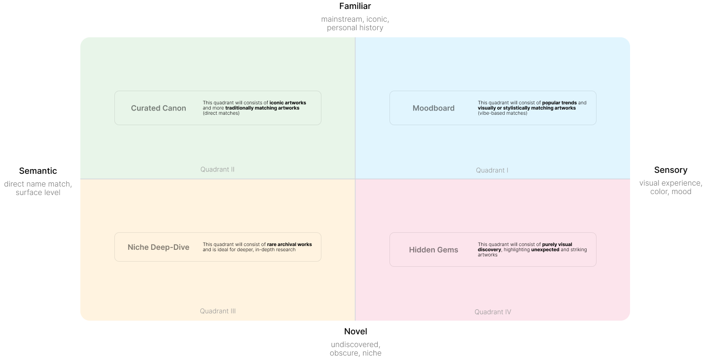

<!DOCTYPE html>
<html lang="en">
<head>
  <meta charset="UTF-8" />
  <meta name="viewport" content="width=device-width, initial-scale=1.0, viewport-fit=cover" />
  <title>NGA — Artwork Explorer</title>
  <link rel="preconnect" href="https://fonts.googleapis.com" />
  <link href="https://fonts.googleapis.com/css2?family=Inter:wght@300;400;500&display=swap" rel="stylesheet" />
  <script>if('serviceWorker' in navigator){navigator.serviceWorker.getRegistrations().then(rs=>rs.forEach(r=>r.unregister()));}</script>
  <script src="https://unpkg.com/react@18/umd/react.production.min.js"></script>
  <script src="https://unpkg.com/react-dom@18/umd/react-dom.production.min.js"></script>
  <script src="https://unpkg.com/@babel/standalone/babel.min.js"></script>
  <style>
    *, *::before, *::after { box-sizing:border-box; margin:0; padding:0; }
    html, body { overscroll-behavior:none; }
    .info-modal::-webkit-scrollbar { display:none; }

    /* ── Info modal base (desktop) ── */
    .info-backdrop { position:fixed;inset:0;z-index:400;background:rgba(0,0,0,0.45); }
    .info-modal { position:fixed;left:50%;top:50%;transform:translate(-50%,-50%);z-index:401;width:min(1100px,94vw);max-height:88vh;background:#fff;border-radius:20px;border:1.5px solid #d1d5dc;box-shadow:0 25px 50px -12px rgba(0,0,0,0.22);overflow-y:auto;overflow-x:hidden;display:flex;flex-direction:column;scrollbar-width:none;-ms-overflow-style:none; }
    .info-topbar { position:sticky;top:0;z-index:10;background:#fff;display:flex;align-items:center;justify-content:flex-end;padding:14px 16px 0;border-radius:20px 20px 0 0; }
    .info-title-mobile { display:none; }
    .info-title-desktop { font-family:'Inter',sans-serif;font-weight:500;font-size:22px;color:#111;margin-bottom:12px;letter-spacing:-0.02em; }
    .info-desc-section { padding:24px 56px 32px;border-bottom:1px solid #f0f0f0; }
    .info-close-btn { display:inline-flex;align-items:center;gap:4px;background:#fff;border:1.5px solid #d1d5dc;border-radius:999px;padding:7px 14px 7px 11px;cursor:pointer;font-family:'Inter',sans-serif;font-size:13px;color:#858585;transition:background 0.15s; }
    .info-cards-mobile { display:none; }
    .info-card { border:1.5px solid #e5e7eb;border-radius:14px;padding:16px 18px; }
    .info-card strong { font-family:'Inter',sans-serif;font-size:15px;font-weight:600;color:#111;display:block;margin-bottom:6px; }
    .info-card p { font-family:'Inter',sans-serif;font-size:14px;line-height:1.6;color:#6b7280;margin:0; }
    body { font-family:'Inter',sans-serif; background:#111; overflow:hidden; -webkit-font-smoothing:antialiased; -webkit-tap-highlight-color:transparent; touch-action:manipulation; }

    @keyframes blob1 { 0%,100%{transform:translate(0,0) scale(1)} 33%{transform:translate(60px,-40px) scale(1.12)} 66%{transform:translate(-30px,50px) scale(0.92)} }
    @keyframes blob2 { 0%,100%{transform:translate(0,0) scale(1)} 33%{transform:translate(-70px,30px) scale(0.9)} 66%{transform:translate(40px,-60px) scale(1.08)} }
    @keyframes blob3 { 0%,100%{transform:translate(0,0) scale(1)} 50%{transform:translate(50px,40px) scale(1.06)} }
    @keyframes blob4 { 0%,100%{transform:translate(0,0) scale(1)} 40%{transform:translate(-40px,-50px) scale(0.94)} 80%{transform:translate(30px,20px) scale(1.04)} }
    @keyframes blob5 { 0%,100%{transform:translate(0,0) scale(1)} 50%{transform:translate(-60px,60px) scale(1.1)} }
    @keyframes tooltipFadeIn { from{opacity:0;transform:translateY(4px) scale(0.97)} to{opacity:1;transform:translateY(0) scale(1)} }
    @keyframes screenFadeIn  { from{opacity:0;transform:scale(1.015)} to{opacity:1;transform:scale(1)} }
    @keyframes screenFadeOut { from{opacity:1;transform:scale(1)} to{opacity:0;transform:scale(0.985)} }
    @keyframes cursorBlink   { 0%,100%{opacity:1} 50%{opacity:0} }
    @keyframes labelSlideIn  { from{opacity:0;transform:translateY(6px)} to{opacity:1;transform:translateY(0)} }
    @keyframes backdropIn    { from{opacity:0} to{opacity:1} }
    @keyframes panelSlideIn  { from{transform:translateX(100%)} to{transform:translateX(0)} }
    @keyframes imgRevealD    { from{transform:scale(1.07);filter:brightness(0.65)} to{transform:scale(1);filter:brightness(1)} }

    input[type=range] { -webkit-appearance:none; appearance:none; width:100%; height:16px; background:transparent; outline:none; cursor:pointer; }
    input[type=range]::-webkit-slider-runnable-track { height:16px; border-radius:999px; background:linear-gradient(to right,#030213 var(--pct),#ececf0 var(--pct)); }
    input[type=range]::-webkit-slider-thumb { -webkit-appearance:none; width:16px; height:16px; border-radius:999px; background:#fff; border:1px solid #030213; box-shadow:0 1px 3px rgba(0,0,0,0.15); transition:transform 0.15s,box-shadow 0.15s; }
    input[type=range]::-webkit-slider-thumb:hover { transform:scale(1.2); box-shadow:0 2px 8px rgba(0,0,0,0.2); }

    .btn { display:flex; align-items:center; justify-content:center; width:40px; height:40px; background:#fff; border:1px solid #d1d5dc; border-radius:10px; box-shadow:0 1px 3px rgba(0,0,0,0.1); cursor:pointer; transition:background 0.15s,transform 0.1s,box-shadow 0.15s; user-select:none; flex-shrink:0; }
    .btn:hover  { background:#f9fafb; box-shadow:0 4px 6px rgba(0,0,0,0.08); }
    .btn:active { transform:scale(0.92); background:#f3f4f6; }

    /* ── Canvas shell ── */
    .canvas-root { position:relative; overflow:hidden; background:linear-gradient(148deg,#f7f9fd 0%,#eef1f8 100%); }

    /* ── In-canvas axis lines — live inside canvas-inner, move with artworks ── */
    .axis-center-x { position:absolute; top:50%; left:-200%; width:500%; height:1px; background:rgba(0,0,0,0.15); pointer-events:none; }
    .axis-center-y { position:absolute; left:50%; top:-200%; height:500%; width:1px; background:rgba(0,0,0,0.15); pointer-events:none; }

    .canvas-inner { position:absolute; inset:0; will-change:transform; }

    .axis-label { position:absolute; font-family:'Inter',sans-serif; font-weight:300; font-size:13px; line-height:18px; letter-spacing:0.3px; color:#000; pointer-events:none; user-select:none; z-index:5; background:rgba(255,255,255,0.32); backdrop-filter:blur(100px); -webkit-backdrop-filter:blur(100px); filter:drop-shadow(0px 2px 4px rgba(0,0,0,0.10)); border-radius:12px; padding:8px 16px; white-space:nowrap; }
    .quad-label  { position:absolute; font-family:'Inter',sans-serif; font-weight:500; font-size:9px; letter-spacing:0.12em; text-transform:uppercase; color:#777777; pointer-events:none; user-select:none; z-index:4; }

    .artwork-node { position:absolute; transform:translate(-50%,-50%); border-radius:6px; overflow:hidden; cursor:pointer; will-change:transform,left,top,opacity,width,height; }
    .artwork-node img { display:block; width:100%; height:100%; object-fit:cover; border-radius:6px; pointer-events:none; background:#f3f4f6; }

    .tooltip { position:fixed; background:#fff; border:1px solid #e5e7eb; border-radius:12px; padding:12px 14px; width:220px; pointer-events:none; z-index:9999; box-shadow:0 10px 15px -3px rgba(0,0,0,0.1),0 4px 6px -2px rgba(0,0,0,0.06); animation:tooltipFadeIn 0.18s cubic-bezier(0.16,1,0.3,1) both; }
    .tooltip-img    { width:100%; height:120px; object-fit:cover; border-radius:6px; margin-bottom:10px; display:block; }
    .tooltip-title  { font-size:13px; font-weight:500; color:#111827; line-height:1.3; margin-bottom:3px; }
    .tooltip-artist { font-size:11px; color:#6a7282; margin-bottom:1px; }
    .tooltip-meta   { font-size:11px; font-weight:300; color:#99a1af; }
    .tooltip-tags   { display:flex; flex-wrap:wrap; gap:4px; margin-top:8px; }
    .tooltip-tag    { font-size:10px; color:#6a7282; background:#f3f4f6; border-radius:999px; padding:2px 7px; }

    .search-input { width:min(620px,calc(100vw - 160px)); height:46px; padding:12px 16px 12px 48px; font-family:'Inter',sans-serif; font-size:14px; color:#0a0a0a; background:#fff; border:1px solid #d1d5dc; border-radius:10px; outline:none; letter-spacing:-0.015em; transition:border-color 0.2s,box-shadow 0.2s; }
    .search-input::placeholder { color:rgba(10,10,10,0.5); }
    .search-input:focus { border-color:#030213; box-shadow:0 0 0 3px rgba(3,2,19,0.08); }
    .zoom-pct { font-family:'Inter',sans-serif; font-size:10px; font-weight:500; color:#6a7282; letter-spacing:0.1px; text-align:center; margin-bottom:4px; }

    /* ── Landing ── */
    .landing-screen { position:fixed; inset:0; z-index:100; overflow:hidden; display:flex; flex-direction:column; align-items:center; justify-content:center; }
    .landing-bg     { position:absolute; inset:0; background:#111; transition:background 2s ease; }
    .blob           { position:absolute; border-radius:50%; transition:background 2s ease,opacity 1.5s ease,width 2s ease,height 2s ease,filter 2s ease; pointer-events:none; }
    .landing-content { position:relative; z-index:2; display:flex; flex-direction:column; align-items:center; gap:0; }
    .landing-eyebrow { font-size:clamp(13px,2vw,16px); font-weight:300; letter-spacing:0.2px; color:rgba(255,255,255,0.45); margin-bottom:10px; animation:labelSlideIn 0.7s ease both; }
    .show-me-row     { display:inline-flex; align-items:baseline; gap:10px; font-size:clamp(22px,5vw,32px); font-weight:500; letter-spacing:-0.04em; animation:labelSlideIn 0.7s 0.08s ease both; cursor:text; max-width:calc(100vw - 48px); }
    .show-me-static      { color:#fff; white-space:nowrap; flex-shrink:0; }
    .show-me-typed       { color:#fff; white-space:pre; }
    .show-me-placeholder { color:rgba(255,255,255,0.4); white-space:pre; }
    .show-me-cursor { display:inline-block; width:2px; height:0.85em; background:rgba(255,255,255,0.85); border-radius:1px; vertical-align:middle; margin:0 1px; opacity:0; transition:opacity 0.15s; }
    .show-me-cursor.visible { opacity:1; animation:cursorBlink 1.1s ease infinite; }
    .tick-slider-wrap { position:relative; margin-top:clamp(48px,10vh,120px); animation:labelSlideIn 0.7s 0.18s ease both; width:min(800px,calc(100vw - 48px)); }
    .tick-bubble { position:absolute; top:-30px; background:rgba(0,0,0,0.4); border-radius:999px; padding:4px 10px; font-size:11px; color:rgba(255,255,255,0.9); letter-spacing:-0.02em; transform:translateX(-50%); transition:left 0.15s; white-space:nowrap; pointer-events:none; }
    .tick-track  { width:100%; height:24px; position:relative; cursor:pointer; }
    .tick-thumb  { position:absolute; top:50%; width:20px; height:20px; background:#fff; border-radius:50%; transform:translate(-50%,-50%); box-shadow:0 0 0 4px rgba(255,255,255,0.25),0 3px 12px rgba(0,0,0,0.5); pointer-events:none; transition:left 0.05s linear; }
    .tick-labels { display:flex; justify-content:space-between; font-size:11px; font-weight:500; color:rgba(255,255,255,0.5); letter-spacing:-0.01em; margin-top:8px; }
    .find-btn { margin-top:32px; display:flex; align-items:center; gap:6px; background:#fff; border:none; border-radius:999px; padding:14px 28px 14px 24px; font-family:'Inter',sans-serif; font-size:19px; font-weight:500; letter-spacing:-0.02em; color:#000; cursor:pointer; box-shadow:0 2px 16px rgba(0,0,0,0.3); transition:transform 0.22s cubic-bezier(0.34,1.56,0.64,1),box-shadow 0.22s; animation:labelSlideIn 0.7s 0.26s ease both; }
    .find-btn:hover  { transform:scale(1.07); box-shadow:0 0 0 6px rgba(255,255,255,0.15),0 0 40px 8px rgba(255,255,255,0.35),0 8px 32px rgba(0,0,0,0.3); }
    .find-btn:active { transform:scale(0.97); }
    .screen-leave { animation:screenFadeOut 0.4s cubic-bezier(0.4,0,1,1) both; }
    .screen-enter { animation:screenFadeIn  0.5s 0.2s cubic-bezier(0,0,0.2,1) both; }

    /* ── Detail Panel — floating centered card ── */
    @keyframes cardPopIn { from{opacity:0;transform:translate(-50%,-50%) scale(0.95)} to{opacity:1;transform:translate(-50%,-50%) scale(1)} }
    .detail-overlay { position:fixed; inset:0; z-index:200; background:transparent; }
    .detail-panel   { position:fixed; left:50%; top:50%; transform:translate(-50%,-50%); width:min(960px,94vw); height:min(540px,88vh); display:flex; flex-direction:row; z-index:201; border-radius:20px; border:1.5px solid #d1d5dc; overflow:hidden; box-shadow:0 25px 50px -12px rgba(0,0,0,0.18),0 10px 20px -5px rgba(0,0,0,0.06); animation:cardPopIn 0.26s cubic-bezier(0.22,1,0.36,1) both; }
    .detail-img-col { width:50%; flex-shrink:0; background:#fff; border-right:1px solid #e5e7eb; display:flex; align-items:center; justify-content:center; padding:18px; overflow:hidden; }
    .detail-img-col img { width:100%; height:100%; object-fit:contain; box-shadow:0 10px 15px -3px rgba(0,0,0,0.1),0 4px 6px -4px rgba(0,0,0,0.1); }
    .detail-img-year    { display:none; }
    .detail-img-overlay { display:none; }
    .detail-info-col { flex:1; background:#fff; display:flex; flex-direction:column; overflow:hidden; min-width:0; min-height:0; }
    .detail-body::-webkit-scrollbar { width:4px; }
    .detail-body::-webkit-scrollbar-track { background:transparent; }
    .detail-body::-webkit-scrollbar-thumb { background:#e5e7eb; border-radius:999px; }
    .detail-info-header { flex-shrink:0; padding:20px 20px 14px; display:flex; align-items:flex-start; justify-content:space-between; gap:12px; border-bottom:1px solid #f3f4f6; }
    .detail-close { flex-shrink:0; display:inline-flex; align-items:center; gap:5px; background:#fff; border:1.5px solid #d1d5dc; border-radius:999px; padding:7px 14px 7px 11px; cursor:pointer; font-family:'Inter',sans-serif; font-size:13px; color:#858585; letter-spacing:-0.01em; transition:background 0.15s,border-color 0.15s; white-space:nowrap; }
    .detail-close:hover { background:#f9fafb; border-color:#b8bec9; }
    .detail-title   { font-size:14px; font-weight:500; line-height:1.3; color:#111; margin-bottom:3px; letter-spacing:-0.02em; }
    .detail-artist  { font-size:12px; color:rgba(0,0,0,0.5); margin-bottom:2px; letter-spacing:-0.01em; }
    .detail-meta-line { font-size:11px; color:rgba(0,0,0,0.38); display:flex; align-items:center; }
    .detail-meta-bullet { width:3px; height:3px; border-radius:50%; background:rgba(0,0,0,0.28); margin:0 7px; flex-shrink:0; display:inline-block; }
    .detail-collection { font-size:10px; color:#b0b8c4; letter-spacing:0.02em; margin-top:3px; }
    .detail-body    { flex:1; min-height:0; overflow-y:auto; padding:14px 20px 22px; }
    .detail-rule    { height:1px; background:#f3f4f6; margin:12px 0; }
    .detail-desc    { font-size:12.5px; line-height:1.72; color:#4b5563; }
    .detail-section-head { font-size:9px; font-weight:600; letter-spacing:0.14em; text-transform:uppercase; color:#99a1af; margin-bottom:7px; }
    .detail-analysis     { font-size:12px; line-height:1.65; color:#9ca3af; font-style:italic; }
    .detail-analysis-row { display:flex; gap:14px; align-items:flex-start; }
    .detail-analysis-txt { flex:1; min-width:0; }
    .detail-meta-grid { display:grid; grid-template-columns:68px 1fr; gap:6px 10px; margin-bottom:12px; }
    .detail-meta-k { font-size:10px; letter-spacing:0.09em; text-transform:uppercase; color:#d1d5dc; padding-top:1px; }
    .detail-meta-v { font-size:12px; color:#4b5563; }

    /* ── Tag system ── */
    .tag-section    { display:flex; flex-direction:column; gap:8px; margin-bottom:16px; }
    .tag-group      { display:flex; flex-wrap:wrap; gap:5px; }
    .tag-group-head { font-size:9px; font-weight:600; letter-spacing:0.12em; text-transform:uppercase; color:#d1d5dc; margin-bottom:2px; }
    /* base tag */
    .dtag { display:inline-flex; align-items:center; gap:4px; font-size:11px; padding:3px 9px; border-radius:999px; border:1px solid; cursor:pointer; transition:filter 0.15s,transform 0.1s; user-select:none; }
    .dtag:hover { filter:brightness(0.92); transform:translateY(-1px); }
    /* categories */
    .dtag--subject { color:#0284c7; background:rgba(2,132,199,0.08);   border-color:rgba(2,132,199,0.28); }
    .dtag--style   { color:#7c3aed; background:rgba(124,58,237,0.08);  border-color:rgba(124,58,237,0.28); }
    .dtag--mood    { color:#b45309; background:rgba(180,83,9,0.08);    border-color:rgba(180,83,9,0.28); }
    .dtag--custom  { color:#047857; background:rgba(4,120,87,0.08);    border-color:rgba(4,120,87,0.28); }
    .dtag-remove   { display:inline-flex; align-items:center; justify-content:center; width:14px; height:14px; border-radius:50%; background:rgba(0,0,0,0.1); font-size:10px; line-height:1; cursor:pointer; transition:background 0.12s; border:none; padding:0; color:inherit; }
    .dtag-remove:hover { background:rgba(0,0,0,0.22); }
    /* add-tag input row */
    .tag-add-row { display:flex; gap:6px; margin-top:4px; }
    .tag-add-input { flex:1; height:30px; padding:0 10px; font-family:'Inter',sans-serif; font-size:12px; color:#111; background:#f9fafb; border:1px solid #e5e7eb; border-radius:6px; outline:none; transition:border-color 0.15s,box-shadow 0.15s; }
    .tag-add-input::placeholder { color:#d1d5dc; }
    .tag-add-input:focus { border-color:#6b7280; box-shadow:0 0 0 2px rgba(107,114,128,0.12); }
    .tag-add-btn { height:30px; padding:0 12px; background:#111; color:#fff; border:none; border-radius:6px; font-family:'Inter',sans-serif; font-size:11px; font-weight:500; cursor:pointer; transition:background 0.15s; white-space:nowrap; }
    .tag-add-btn:hover { background:#374151; }

    /* Quadrant mini-map */
    .qmap-outer { position:relative; width:96px; flex-shrink:0; }
    .qmap-grid  { position:relative; width:96px; height:96px; border:1px solid #e5e7eb; border-radius:4px; overflow:hidden; display:grid; grid-template-columns:1fr 1fr; grid-template-rows:1fr 1fr; }
    .qmap-ax    { position:absolute; pointer-events:none; }
    .qmap-ax-x  { top:50%; left:0; right:0; height:1px; background:rgba(0,0,0,0.12); }
    .qmap-ax-y  { left:50%; top:0; bottom:0; width:1px; background:rgba(0,0,0,0.12); }
    .qmap-dot   { position:absolute; width:10px; height:10px; border-radius:50%; background:#c9a96e; box-shadow:0 0 8px rgba(201,169,110,0.5); transform:translate(-50%,-50%); pointer-events:none; }
    .qmap-lbl   { display:flex; justify-content:space-between; margin-top:5px; font-size:8px; color:#d1d5dc; }

    .detail-cta { display:flex; align-items:center; justify-content:center; gap:8px; padding:12px 20px; border-radius:8px; border:1px solid rgba(201,169,110,0.45); color:#c9a96e; font-size:11px; font-weight:500; letter-spacing:0.07em; text-transform:uppercase; text-decoration:none; transition:background 0.18s,transform 0.15s; margin-top:16px; }
    .detail-cta:hover { background:rgba(201,169,110,0.08); transform:translateY(-1px); }
    .why-shown { background:#fafafa; border:1px solid #f0f0f0; border-radius:10px; padding:12px 14px; margin-top:14px; }
    .why-shown-head { display:flex; align-items:center; gap:8px; margin-bottom:8px; }
    .why-tag { display:inline-flex; align-items:center; gap:4px; font-size:9px; font-weight:600; letter-spacing:0.1em; text-transform:uppercase; padding:3px 8px; border-radius:999px; flex-shrink:0; }
    .why-tag--semantic { color:#5b21b6; background:rgba(91,33,182,0.08); border:1px solid rgba(91,33,182,0.2); }
    .why-tag--sensory  { color:#92400e; background:rgba(201,169,110,0.12); border:1px solid rgba(201,169,110,0.35); }
    .why-text { font-size:11.5px; line-height:1.65; color:#6b7280; }
    .similar-row { display:flex; gap:10px; overflow-x:auto; padding-bottom:4px; margin-top:8px; -webkit-overflow-scrolling:touch; scrollbar-width:none; }
    .similar-row::-webkit-scrollbar { display:none; }
    .similar-card { flex-shrink:0; width:137px; background:#fff; border:1px solid #e5e7eb; border-radius:8px; overflow:hidden; cursor:pointer; box-shadow:0 1px 4px rgba(0,0,0,0.07); transition:transform 0.15s,box-shadow 0.15s; }
    .similar-card:hover { transform:translateY(-2px); box-shadow:0 4px 10px rgba(0,0,0,0.12); }
    .similar-card img { width:137px; height:79px; object-fit:cover; display:block; }
    .similar-card-title { font-size:8px; font-weight:500; color:#111; padding:6px 8px 2px; line-height:1.3; white-space:nowrap; overflow:hidden; text-overflow:ellipsis; }
    .similar-card-artist { font-size:6px; color:#9ca3af; padding:0 8px 6px; white-space:nowrap; overflow:hidden; text-overflow:ellipsis; }

    @media (max-width:600px) {
      body { background:#050505; }
      .landing-screen { justify-content:flex-start; padding:calc(env(safe-area-inset-top) + 116px) 22px calc(env(safe-area-inset-bottom) + 32px); }
      .landing-content { width:100%; min-height:calc(100svh - 168px); justify-content:center; }
      .landing-eyebrow { font-size:13px; margin-bottom:12px; color:rgba(255,255,255,0.52); }
      .show-me-row { width:100%; max-width:none; display:flex; flex-wrap:wrap; justify-content:center; gap:6px 8px; font-size:28px; line-height:1.12; text-align:center; letter-spacing:-0.035em; }
      .show-me-typed, .show-me-placeholder { white-space:normal; overflow-wrap:anywhere; }
      .tick-slider-wrap { width:100%; margin-top:72px; }
      .tick-track { height:36px; }
      .tick-thumb { width:28px; height:28px; }
      .tick-labels { font-size:11px; padding:0 2px; }
      .tick-bubble { top:-34px; }
      .find-btn { margin-top:30px; width:min(240px,80vw); height:54px; justify-content:center; font-size:17px; padding:0 24px; touch-action:manipulation; }

      .screen-enter { min-height:100svh; }
      .screen-enter > header {
        height:calc(64px + env(safe-area-inset-top)) !important;
        padding:calc(env(safe-area-inset-top) + 10px) 14px 10px !important;
        display:flex !important; flex-direction:row !important;
        align-items:center !important; justify-content:space-between !important;
        gap:10px !important; position:relative !important;
      }
      /* Back button — circular pill */
      .screen-enter > header > button:first-child {
        position:static !important; transform:none !important;
        width:42px !important; height:42px !important; min-width:42px !important;
        padding:0 !important; border-radius:999px !important;
        border:1.5px solid #e5e7eb !important; background:#fff !important;
        display:flex !important; align-items:center !important; justify-content:center !important;
        font-size:0 !important; flex-shrink:0 !important;
      }
      .screen-enter > header > button:first-child svg { width:18px !important; height:18px !important; }
      /* Search bar — expands to fill space */
      .screen-enter > header > div {
        flex:1 !important; min-width:0 !important;
        position:relative !important; display:flex !important; align-items:center !important;
      }
      .search-input {
        width:100% !important; height:44px !important;
        padding:10px 16px 10px 40px !important; font-size:15px !important;
        border-radius:999px !important; border:1.5px solid #e5e7eb !important;
        box-shadow:none !important;
      }
      .search-input::placeholder { color:rgba(10,10,10,0.38); }
      /* Info button — circular pill */
      .screen-enter > header > button:last-child {
        position:static !important; transform:none !important;
        width:42px !important; height:42px !important; min-width:42px !important;
        padding:0 !important; border-radius:999px !important;
        border:1.5px solid #e5e7eb !important; background:#fff !important;
        display:flex !important; align-items:center !important; justify-content:center !important;
        font-size:0 !important; gap:0 !important; line-height:0 !important;
        flex-shrink:0 !important;
      }
      .screen-enter > header > button:last-child svg { width:18px !important; height:18px !important; }

      .canvas-root { touch-action:none; cursor:grab; }
      .axis-label { font-size:11px; line-height:16px; padding:5px 9px; border-radius:999px; background:rgba(255,255,255,0.5); }
      .quad-label { font-size:7px; letter-spacing:0.1em; color:#777777; }
      .artwork-node { border-radius:8px; }
      .artwork-node img { border-radius:8px; }
      .tooltip { display:none; }

      .canvas-root > div[style*="top:24"], .canvas-root > div[style*="top: 24"] { top:auto !important; right:12px !important; bottom:16px !important; flex-direction:row !important; background:rgba(255,255,255,0.76) !important; border:1px solid rgba(209,213,220,0.9) !important; border-radius:999px !important; padding:6px !important; backdrop-filter:blur(16px); -webkit-backdrop-filter:blur(16px); box-shadow:0 14px 34px rgba(0,0,0,0.16); }
      .canvas-root > div[style*="top:24"] > div, .canvas-root > div[style*="top: 24"] > div { display:none !important; }
      .btn { width:44px; height:44px; border-radius:999px; box-shadow:none; }

      .screen-enter > footer { height:calc(112px + env(safe-area-inset-bottom)) !important; padding:18px 20px calc(env(safe-area-inset-bottom) + 34px) !important; justify-content:center !important; }
      .screen-enter > footer .tick-slider-wrap { width:100% !important; margin:0 !important; }
      .screen-enter > footer .tick-track { height:30px; }
      .screen-enter > footer .tick-thumb { width:24px; height:24px; }

      .detail-overlay { background:rgba(17,24,39,0.26); backdrop-filter:blur(10px); -webkit-backdrop-filter:blur(10px); }
      .detail-panel { flex-direction:column; left:0; right:0; top:auto; bottom:0; width:100vw; height:min(86svh,760px); border-radius:22px 22px 0 0; border-left:0; border-right:0; border-bottom:0; transform:none; animation:mobileSheetIn 0.28s cubic-bezier(0.22,1,0.36,1) both; }
      .detail-panel::before { content:""; position:absolute; top:8px; left:50%; width:42px; height:4px; border-radius:999px; background:#d1d5dc; transform:translateX(-50%); z-index:3; }
      .detail-img-col { width:100%; height:34%; min-height:190px; border-right:none; border-bottom:1px solid #e5e7eb; padding:14px 14px 10px; }
      .detail-img-col img { border-radius:0; }
      .detail-info-header { padding:16px 16px 12px; gap:10px; }
      .detail-title { font-size:16px; line-height:1.25; }
      .detail-artist { font-size:12px; }
      .detail-meta-line { font-size:10px; flex-wrap:wrap; row-gap:3px; }
      .detail-close { width:38px; height:38px; padding:0; justify-content:center; font-size:0; gap:0; line-height:0; }
      .detail-close svg { width:13px; height:13px; display:block; }
      .detail-body { padding:14px 16px calc(env(safe-area-inset-bottom) + 20px); }
      .detail-desc { font-size:13px; line-height:1.62; }
      .why-text { font-size:12px; line-height:1.6; }
      .detail-cta { min-height:44px; border-radius:999px; }
      .similar-card { width:148px; border-radius:10px; }
      .similar-card img { width:148px; height:88px; }

      .info-modal { top:auto !important; left:0 !important; right:0 !important; bottom:0 !important; transform:none; width:100% !important; max-height:88vh !important; border-radius:20px 20px 0 0 !important; border-left:none !important; border-right:none !important; border-bottom:none !important; animation:mobileSheetIn 0.28s cubic-bezier(0.22,1,0.36,1) both; }
      .info-modal::before { content:""; position:absolute; top:8px; left:50%; width:42px; height:4px; border-radius:999px; background:#d1d5dc; transform:translateX(-50%); z-index:3; }
      .info-topbar { padding:20px 20px 12px !important; justify-content:space-between !important; }
      .info-title-mobile { display:block !important; font-family:'Inter',sans-serif; font-size:20px; font-weight:600; color:#111; line-height:1.3; flex:1; margin-right:12px; margin-bottom:0; }
      .info-title-desktop { display:none !important; }
      .info-desc-section { padding:16px 20px 20px !important; }
      .info-close-btn { width:38px !important; height:38px !important; padding:0 !important; justify-content:center !important; border-radius:999px !important; flex-shrink:0; }
      .info-close-label { display:none !important; }
      .info-cards-mobile { display:flex !important; flex-direction:column; gap:12px; padding:16px 20px 40px; }
    }

    @keyframes mobileSheetIn {
      from { opacity:0; transform:translateY(100%); }
      to   { opacity:1; transform:translateY(0); }
    }
  </style>
</head>
<body>
<div id="root"></div>
<script type="text/babel">
const { useState, useRef, useCallback, useEffect, useMemo } = React;

// ─── Tag taxonomy ─────────────────────────────────────────────────────────────
const TAG_SUBJECTS = new Set(['flowers','bloom','floral','bouquet','water lilies','sunflowers','roses','peonies','cat','feline','animal','pet','sky','clouds','landscape','seascape','ocean','sea','rain','outdoor','indoor','portrait','garden','field','fog','mist']);
const TAG_STYLES   = new Set(['impressionist','baroque','realist','expressionist','pointillist','romantic','dutch golden age','post-impressionist','symbolist','japonisme','luminist','printmaking','academic']);
const TAG_MOODS    = new Set(['vibrant','serene','dramatic','intimate','golden','dreamlike','bold','quiet','luminous','melancholy','energetic','delicate','mysterious','ethereal','pastoral','wistful']);

function tagCategory(tag) {
  const t = tag.toLowerCase();
  if (TAG_SUBJECTS.has(t)) return 'subject';
  if (TAG_STYLES.has(t))   return 'style';
  if (TAG_MOODS.has(t))    return 'mood';
  return 'custom';
}

// ─── Gradient palettes ────────────────────────────────────────────────────────
const PALETTES = [
  { keys:['red','crimson','fire','sunset','bold','flowers','floral','bloom','blossom','rose','petal','flower','vibrant','colorful'],
    blobs:['#c0392b','#8e0a37','#e65100','#b03a2e'], base:'#1a0208' },
  { keys:['lonely','quiet','grey','gray','fog','mist','cold','silence','empty','solitude'],
    blobs:['#263238','#37474f','#1565c0','#0d1b2a'], base:'#0a0e12' },
  { keys:['bloom','spring','garden','pink','floral','cherry'],
    blobs:['#c2185b','#7b1fa2','#e91e63','#9c27b0'], base:'#130820' },
  { keys:['memory','nostalgia','amber','golden','dusk','twilight'],
    blobs:['#e65100','#bf360c','#6d4c41','#4e342e'], base:'#1a0e00' },
  { keys:['nature','forest','tree','green','leaf','grass','earth','wild'],
    blobs:['#1b5e20','#2e7d32','#004d40','#1a237e'], base:'#000f05' },
  { keys:['mystery','dark','night','shadow','dream','surreal'],
    blobs:['#1a0533','#0d0d2b','#0f3460','#2c003e'], base:'#05000d' },
  { keys:['sky','ocean','sea','wave','blue','calm','serene','water','cloud'],
    blobs:['#006064','#01579b','#00838f','#0277bd'], base:'#000e1a' },
  { keys:['cat','feline','animal','pet','intimate','domestic'],
    blobs:['#4a148c','#6a1b9a','#311b92','#1a237e'], base:'#0d0010' },
];
const NEUTRAL_BLOBS = ['#1e1e2e','#16213e','#0f3460','#1a1a2e'];
const NEUTRAL_BASE  = '#111';

function getPalette(query) {
  if (!query.trim()) return null;
  const q = query.toLowerCase();
  for (const p of PALETTES) { if (p.keys.some(k => q.includes(k))) return p; }
  return { blobs:['#1e2a3a','#2a1e3a','#1e3a2a','#3a2a1e'], base:'#0e1217' };
}

// ─── Tick Slider ──────────────────────────────────────────────────────────────
const TICK_COUNT = 40;
function TickSlider({ value, onChange, theme = 'dark', wrapStyle = {} }) {
  const trackRef = useRef(null), dragging = useRef(false);
  const ticks = useMemo(() => Array.from({ length:TICK_COUNT }, (_,i) => {
    const norm=i/(TICK_COUNT-1), edge=Math.min(norm,1-norm)*2;
    return Math.max(5, Math.round(22-edge*12+Math.sin(i*2.1+0.7)*2));
  }), []);
  const getV = cx => { const r=trackRef.current.getBoundingClientRect(); return Math.max(0,Math.min(1,(cx-r.left)/r.width)); };
  const onPointerDown = e => { dragging.current=true; trackRef.current.setPointerCapture(e.pointerId); onChange(getV(e.clientX)); };
  const onPointerMove = e => { if (dragging.current) onChange(getV(e.clientX)); };
  const onPointerUp   = () => { dragging.current=false; };
  const bl = `${value*100}%`;
  const activeFill   = theme === 'light' ? 'rgba(3,2,19,0.82)'  : 'rgba(255,255,255,0.9)';
  const inactiveFill = theme === 'light' ? 'rgba(3,2,19,0.16)'  : 'rgba(255,255,255,0.2)';
  return (
    <div className="tick-slider-wrap" style={wrapStyle}>
      <div className="tick-bubble" style={{ left:bl }}>{Math.round(value*100)}</div>
      <div ref={trackRef} className="tick-track" onPointerDown={onPointerDown} onPointerMove={onPointerMove} onPointerUp={onPointerUp}>
        <svg width="100%" height="24" viewBox="0 0 800 24" preserveAspectRatio="none" overflow="visible"
          style={{ maskImage:`linear-gradient(to right,transparent,white ${Math.round(value*38)}%,white)`, WebkitMaskImage:`linear-gradient(to right,transparent,white ${Math.round(value*38)}%,white)` }}>
          {ticks.map((h,i) => <rect key={i} x={(i/(TICK_COUNT-1))*800} y={(24-h)/2} width="2" height={h} rx="1" fill={i/(TICK_COUNT-1)<=value?activeFill:inactiveFill} style={{ transition:'fill 0.12s' }} />)}
        </svg>
        <div className="tick-thumb" style={{ left:bl }} />
      </div>
      <div className="tick-labels" style={{ color:theme==='light'?'rgba(3,2,19,0.45)':undefined }}><span>focused</span><span>exploratory</span></div>
    </div>
  );
}

// ─── Landing Screen ───────────────────────────────────────────────────────────
const PLACEHOLDERS = ['something vibrant…','a field of flowers…','cats in repose…','a dramatic sky…','quiet solitude…','something golden…'];
function LandingScreen({ onFind, initQuery, initTemperature, onQueryChange, onTempChange }) {
  const [query,setQuery]             = useState(initQuery||'');
  const [temperature,setTemperature] = useState(initTemperature??0.05);
  const [phIndex,setPhIndex]         = useState(0);
  const [leaving,setLeaving]         = useState(false);
  const [focused,setFocused]         = useState(false);
  const inputRef = useRef(null);
  useEffect(()=>{ const id=setInterval(()=>setPhIndex(i=>(i+1)%PLACEHOLDERS.length),3200); return()=>clearInterval(id); },[]);
  useEffect(()=>{ inputRef.current?.focus(); },[]);
  const palette=getPalette(query), intensity=Math.pow(temperature,0.75), blobScale=0.15+temperature*0.85, blobBlur=Math.round(110-temperature*55);
  const blobs=palette?palette.blobs:NEUTRAL_BLOBS;
  const baseBg=palette?`color-mix(in srgb,${palette.base} ${Math.round((1-intensity*0.6)*100)}%,#111)`:NEUTRAL_BASE;
  const handleQuery=v=>{ setQuery(v); onQueryChange?.(v); };
  const handleTemp=v=>{ setTemperature(v); onTempChange?.(v); };
  const handleFind=()=>{ if(!query.trim()){inputRef.current?.focus();return;} setLeaving(true); setTimeout(()=>onFind(query,temperature),380); };
  const onKey=e=>{ if(e.key==='Enter') handleFind(); };
  return (
    <div className={`landing-screen${leaving?' screen-leave':''}`}>
      <div className="landing-bg" style={{ background:baseBg }} />
      <div className="blob" style={{ width:1000*blobScale,height:1000*blobScale,top:'-25%',right:'-15%',background:blobs[0],opacity:intensity*0.95,filter:`blur(${blobBlur}px)`,animation:'blob1 12s ease-in-out infinite' }} />
      <div className="blob" style={{ width:900*blobScale,height:900*blobScale,bottom:'-25%',left:'-15%',background:blobs[1],opacity:intensity*0.90,filter:`blur(${blobBlur+5}px)`,animation:'blob2 15s ease-in-out infinite' }} />
      <div className="blob" style={{ width:750*blobScale,height:750*blobScale,top:'20%',right:'10%',background:blobs[2],opacity:intensity*0.80,filter:`blur(${blobBlur-5}px)`,animation:'blob3 10s ease-in-out infinite' }} />
      <div className="blob" style={{ width:700*blobScale,height:700*blobScale,top:'-5%',left:'-5%',background:blobs[3],opacity:intensity*0.75,filter:`blur(${blobBlur+10}px)`,animation:'blob4 18s ease-in-out infinite' }} />
      <div className="blob" style={{ width:650*blobScale,height:650*blobScale,bottom:'-10%',left:'30%',background:blobs[0],opacity:intensity*0.65,filter:`blur(${blobBlur+15}px)`,animation:'blob5 14s 3s ease-in-out infinite' }} />
      <div style={{ position:'absolute',inset:0,zIndex:1,pointerEvents:'none',backgroundImage:`url("data:image/svg+xml,%3Csvg viewBox='0 0 200 200' xmlns='http://www.w3.org/2000/svg'%3E%3Cfilter id='n'%3E%3CfeTurbulence type='fractalNoise' baseFrequency='0.75' numOctaves='4' stitchTiles='stitch'/%3E%3C/filter%3E%3Crect width='100%25' height='100%25' filter='url(%23n)' opacity='0.04'/%3E%3C/svg%3E")`,backgroundRepeat:'repeat',backgroundSize:'200px 200px',mixBlendMode:'overlay',opacity:0.5 }} />
      <div className="landing-content">
        <div className="landing-eyebrow">Search by word, feeling, or idea</div>
        <div className="show-me-row" onClick={()=>inputRef.current?.focus()}>
          <span className="show-me-static">Show me</span>
          {query
            ? <><span className="show-me-typed">{query}</span><span className={`show-me-cursor${focused?' visible':''}`} /></>
            : <><span className="show-me-placeholder">{PLACEHOLDERS[phIndex]}</span><span className={`show-me-cursor${focused?' visible':''}`} /></>
          }
          <input ref={inputRef} type="text" value={query} onChange={e=>handleQuery(e.target.value)} onKeyDown={onKey} onFocus={()=>setFocused(true)} onBlur={()=>setFocused(false)} autoComplete="off" spellCheck={false} style={{ position:'absolute',opacity:0,width:'1px',height:'1px',pointerEvents:'none' }} />
        </div>
        <TickSlider value={temperature} onChange={handleTemp} />
        <button className="find-btn" onClick={handleFind}>Find</button>
      </div>
    </div>
  );
}

// ─── Artwork data ─────────────────────────────────────────────────────────────
// Axes: X = Semantic (left, 0) → Sensory (right, 100)
//       Y = Mainstream (top, low%) → Niche (bottom, high%)
// spreadX/spreadY = analytically correct positions at temperature=1
// focusedX/focusedY = cluster near centre at temperature=0
const ARTWORKS = [
  {
    id:1, img:'https://api.nga.gov/iiif/f033a552-2901-4c21-95ed-93d13e598632/full/!400,400/0/default.jpg',
    title:'The Alba Madonna', artist:'Raphael', year:'c. 1510',
    medium:'oil on panel transferred to canvas', dims:'overall (diameter): 94.5 cm (37 3/16 in.)',
    collection:'National Gallery of Art, Washington D.C.',
    ngaUrl:'https://www.nga.gov/collection/art-object-page.26.html',
    description:'One of the most beloved works in the NGA collection, this tondo depicts the Virgin Mary in a Roman landscape with the Christ Child and young Saint John. The circular format gives the composition a sense of cosmic harmony. Raphael\'s mastery of sfumato and his ability to combine Florentine grace with Roman monumentality are fully on display.',
    analysis:'Globally famous and universally taught — an anchor of the Mainstream axis. Discovered through art-historical terminology: Madonna, Renaissance, Raphael.',
    tags:["renaissance", "portrait", "landscape", "religious", "serene", "luminous", "classical"],
    spreadX:85, spreadY:14, focusedX:50, focusedY:48, baseSize:80, relevance:0.95, quadX:22, quadY:4,
  },
  {
    id:2, img:'https://api.nga.gov/iiif/b705a403-3496-42e8-abf5-a37e34c32198/full/!400,400/0/default.jpg',
    title:'Girl with the Red Hat', artist:'Johannes Vermeer', year:'c. 1669',
    medium:'oil on panel', dims:'painted surface: 22.8 x 18 cm (9 x 7 1/16 in.)',
    collection:'National Gallery of Art, Washington D.C.',
    ngaUrl:'https://www.nga.gov/collection/art-object-page.60.html',
    description:'The smallest of Vermeer\'s known works, this intimate portrait is a study in concentrated light. The sitter\'s red hat catches light from an unseen window. The lion-head finial of the chair dissolves into soft spheres under Vermeer\'s use of camera obscura-style optics — painting as optical instrument.',
    analysis:'Sensory and intimate — discovered through colour, light, and feeling. Vermeer places it in the familiar zone, yet its small scale gives it surprising novelty.',
    tags:["portrait", "dutch golden age", "intimate", "luminous", "serene", "indoor"],
    spreadX:76, spreadY:22, focusedX:52, focusedY:47, baseSize:74, relevance:0.88, quadX:62, quadY:20,
  },
  {
    id:3, img:'https://api.nga.gov/iiif/5dc133fb-5304-4ccb-b715-9361f638f281/full/!400,400/0/default.jpg',
    title:'Self-Portrait', artist:'Rembrandt van Rijn', year:'1659',
    medium:'oil on canvas', dims:'overall: 84.5 x 66 cm (33 1/4 x 26 in.)',
    collection:'National Gallery of Art, Washington D.C.',
    ngaUrl:'https://www.nga.gov/collection/art-object-page.79.html',
    description:'One of over 40 known self-portraits, this late work shows Rembrandt at 53, having recently survived bankruptcy. His gaze is unwavering — an artist who has lost everything except the power of honest observation. The warm amber light emerges from shadow in the manner he invented: chiaroscuro as psychological revelation.',
    analysis:'Iconic and globally recognised — deep Mainstream territory. Primarily a semantic match: self-portrait, Rembrandt, Dutch Golden Age.',
    tags:["portrait", "dutch golden age", "dramatic", "intimate", "luminous", "baroque"],
    spreadX:82, spreadY:18, focusedX:48, focusedY:50, baseSize:76, relevance:0.9, quadX:18, quadY:8,
  },
  {
    id:4, img:'https://api.nga.gov/iiif/45f18edb-fa34-4907-8d14-3e14098d304c/full/!400,400/0/default.jpg',
    title:'Before the Ballet', artist:'Edgar Degas', year:'1890/1892',
    medium:'oil on canvas', dims:'overall: 40 x 88.9 cm (15 3/4 x 35 in.)',
    collection:'National Gallery of Art, Washington D.C.',
    ngaUrl:'https://www.nga.gov/collection/art-object-page.1158.html',
    description:'In the wings of the Paris Opera, dancers stretch and adjust costumes in the cramped backstage space. Degas attended hundreds of rehearsals, building encyclopedic knowledge of this world. His unusual downward angle collapses pictorial depth into a shimmering pattern of tulle and pink light.',
    analysis:'Degas ballerinas are iconic — Mainstream territory for anyone who knows Impressionism. The atmospheric quality and cropped composition add a strong sensory dimension.',
    tags:["portrait", "impressionist", "indoor", "delicate", "intimate", "movement", "luminous"],
    spreadX:68, spreadY:16, focusedX:51, focusedY:49, baseSize:72, relevance:0.86, quadX:66, quadY:14,
  },
  {
    id:5, img:'https://api.nga.gov/iiif/4f117b4f-4efe-4b2e-88e7-a01975003d95/full/!400,400/0/default.jpg',
    title:'Approach to Venice', artist:'J.M.W. Turner', year:'1844',
    medium:'oil on canvas', dims:'overall: 62 x 94 cm (24 7/16 x 37 in.)',
    collection:'National Gallery of Art, Washington D.C.',
    ngaUrl:'https://www.nga.gov/collection/art-object-page.117.html',
    description:'Turner dissolves Venice into a haze of golden light and shimmering water. The city\'s domes emerge from mist like a hallucination. By 1844 his canvases had become almost entirely atmospheric — pigment as pure sensation. Ruskin called him \'the painter of light\'; this work shows why.',
    analysis:'Pure sensation and colour — firmly in the Sensory quadrant. Turner\'s fame puts it in Mainstream territory, yet the abstract quality surprises viewers who expect conventional landscape.',
    tags:["landscape", "seascape", "romantic", "luminous", "ethereal", "outdoor", "dreamlike", "golden", "water"],
    spreadX:90, spreadY:22, focusedX:54, focusedY:46, baseSize:78, relevance:0.85, quadX:88, quadY:22,
  },
  {
    id:6, img:'https://api.nga.gov/iiif/406b5d56-d196-4bb0-b2e0-5a2f6fd52d0a/full/!400,400/0/default.jpg',
    title:'Breezing Up (A Fair Wind)', artist:'Winslow Homer', year:'1873-1876',
    medium:'oil on canvas', dims:'overall: 61.5 x 97 cm (24 3/16 x 38 3/16 in.)',
    collection:'National Gallery of Art, Washington D.C.',
    ngaUrl:'https://www.nga.gov/collection/art-object-page.30228.html',
    description:'Three boys sail a catboat on Chesapeake Bay in a freshening wind, the boat heeled over and spray flying. Homer captures the tension between the joy of speed and the risk of the elements with his characteristic directness. The sky is divided between sunlit cumulus and approaching weather — nature as both playground and adversary.',
    analysis:'An American icon — widely recognised and often reproduced. The outdoor energy and sea light give it strong sensory pull alongside its familiar status.',
    tags:["landscape", "seascape", "outdoor", "energetic", "sky", "clouds", "water", "luminist"],
    spreadX:74, spreadY:12, focusedX:50, focusedY:46, baseSize:76, relevance:0.84, quadX:72, quadY:12,
  },
  {
    id:7, img:'https://api.nga.gov/iiif/41934d82-bfb0-447b-b36e-d06dca991243/full/!400,400/0/default.jpg',
    title:'The Lackawanna Valley', artist:'George Inness', year:'c. 1856',
    medium:'oil on canvas', dims:'overall: 86 x 127.5 cm (33 7/8 x 50 3/16 in.)',
    collection:'National Gallery of Art, Washington D.C.',
    ngaUrl:'https://www.nga.gov/collection/art-object-page.30776.html',
    description:'The Delaware, Lackawanna and Western Railroad cuts through the pastoral Lackawanna Valley, a plume of smoke rising against a rounded hill. Inness painted this at the railroad\'s commission — and was told to add a second locomotive. He refused. The result is a meditation on industry and nature, neither glorifying nor condemning progress.',
    analysis:'An American Luminist landmark, familiar to American-art enthusiasts but not globally iconic. The atmospheric landscape quality gives it both semantic and sensory access.',
    tags:["landscape", "outdoor", "romantic", "pastoral", "luminous", "serene", "sky", "luminist"],
    spreadX:58, spreadY:38, focusedX:50, focusedY:52, baseSize:68, relevance:0.76, quadX:55, quadY:38,
  },
  {
    id:8, img:'https://api.nga.gov/iiif/15f8bb8b-ad0f-49e1-9948-60e87ede6be6/full/!400,400/0/default.jpg',
    title:'Allies Day, May 1917', artist:'Childe Hassam', year:'1917',
    medium:'oil on canvas', dims:'overall: 92.7 x 76.8 cm (36 1/2 x 30 1/4 in.)',
    collection:'National Gallery of Art, Washington D.C.',
    ngaUrl:'https://www.nga.gov/collection/art-object-page.30115.html',
    description:'Fifth Avenue on Allies Day is draped in the flags of Allied nations celebrating the American entry into World War I. Hassam was the most commercially successful American Impressionist, and here his technique — broken colour, dazzling light — transforms patriotic spectacle into pure visual sensation.',
    analysis:'A sensory discovery — found through colour, festivity, and urban energy. Hassam is familiar to American art collectors but less globally iconic than the French Impressionists.',
    tags:["landscape", "outdoor", "impressionist", "vibrant", "energetic", "bold", "urban"],
    spreadX:80, spreadY:30, focusedX:53, focusedY:47, baseSize:66, relevance:0.74, quadX:78, quadY:30,
  },
  {
    id:9, img:'https://api.nga.gov/iiif/1a1caf2d-5284-4849-9873-4560341a4b25/full/!400,400/0/default.jpg',
    title:'A Dutch Courtyard', artist:'Pieter de Hooch', year:'1658/1660',
    medium:'oil on canvas', dims:'overall: 69.5 x 60 cm (27 3/8 x 23 5/8 in.)',
    collection:'National Gallery of Art, Washington D.C.',
    ngaUrl:'https://www.nga.gov/collection/art-object-page.63.html',
    description:'A sunlit Dutch courtyard: ordinary domestic space elevated by light into something almost sacred. Figures go about unremarkable tasks while the painter constructs an architecture of shadow and brightness. The red brick, white sky, and receding doorway create a geometry of calm.',
    analysis:'Moodboard territory — discovered through atmosphere and visual mood rather than title alone. De Hooch is moderately familiar but less iconic than Vermeer.',
    tags:["landscape", "outdoor", "dutch golden age", "serene", "quiet", "domestic", "pastoral"],
    spreadX:62, spreadY:40, focusedX:48, focusedY:52, baseSize:66, relevance:0.8, quadX:68, quadY:38,
  },
  {
    id:10, img:'https://api.nga.gov/iiif/644bd0f2-3a24-4971-a234-3a3a0c76d3ba/full/!400,400/0/default.jpg',
    title:'Salisbury Cathedral from Lower Marsh Close', artist:'John Constable', year:'1820',
    medium:'oil on canvas', dims:'overall: 73 x 91 cm (28 3/4 x 35 13/16 in.)',
    collection:'National Gallery of Art, Washington D.C.',
    ngaUrl:'https://www.nga.gov/collection/art-object-page.115.html',
    description:'Constable painted Salisbury Cathedral many times at the invitation of his friend Bishop Fisher. This version captures it through the meadows, framed by oak trees and a dramatic English sky. His freshness of observation — the flickering light, the moist air — was radical in its day and directly inspired the French Romantics.',
    analysis:'A landscape discovered through atmospheric painting and mood. Constable is familiar to art-history students; the work sits in the upper familiarity band with moderate sensory pull.',
    tags:["landscape", "outdoor", "romantic", "luminous", "pastoral", "sky", "clouds", "serene"],
    spreadX:60, spreadY:32, focusedX:48, focusedY:51, baseSize:66, relevance:0.76, quadX:60, quadY:30,
  },
  {
    id:11, img:'https://api.nga.gov/iiif/299ddaef-0a69-4a23-96dc-71d7f1ee6112/full/!400,400/0/default.jpg',
    title:'The Marquesa de Pontejos', artist:'Francisco Goya', year:'c. 1786',
    medium:'oil on canvas', dims:'overall: 210.3 x 127 cm (82 13/16 x 50 in.)',
    collection:'National Gallery of Art, Washington D.C.',
    ngaUrl:'https://www.nga.gov/collection/art-object-page.92.html',
    description:'The Marquesa stands in a silvery landscape, her powdered wig and grey silk dress marking her as a fashionable aristocrat. Yet Goya\'s penetrating eye finds something wistful beneath the costume. It is among his most charming pre-dark-period works, before the disillusionment of war transformed his art.',
    analysis:'A historical portrait — primarily a semantic match for Goya, Spanish portraiture, 18th century. Mainstream to Spanish art specialists but less iconic globally.',
    tags:["portrait", "outdoor", "romantic", "delicate", "wistful", "luminous", "historical"],
    spreadX:40, spreadY:46, focusedX:49, focusedY:51, baseSize:62, relevance:0.72, quadX:30, quadY:44,
  },
  {
    id:12, img:'https://api.nga.gov/iiif/9f1dfa05-09b7-4730-9529-a7953130ac65/full/!400,400/0/default.jpg',
    title:'Mrs. Richard Brinsley Sheridan', artist:'Thomas Gainsborough', year:'1785-1787',
    medium:'oil on canvas', dims:'overall: 219.7 × 153.7 cm (86 1/2 × 60 1/2 in.)',
    collection:'National Gallery of Art, Washington D.C.',
    ngaUrl:'https://www.nga.gov/collection/art-object-page.99.html',
    description:'Elizabeth Linley, the celebrated soprano who became Mrs Sheridan, is depicted with Gainsborough\'s feathery brushwork dissolving her gown into the foliage behind her — a deliberate fusion of woman and natural world that goes beyond portraiture into poetry.',
    analysis:'Semi-familiar: Gainsborough is canonical in British art but less globally known. The lyrical landscape setting gives it sensory qualities beyond a straightforward portrait search.',
    tags:["portrait", "landscape", "outdoor", "romantic", "delicate", "luminous", "serene"],
    spreadX:56, spreadY:34, focusedX:48, focusedY:50, baseSize:64, relevance:0.74, quadX:55, quadY:32,
  },
  {
    id:13, img:'https://api.nga.gov/iiif/a600b632-2bb6-4979-a750-85cee48c24b6/full/!400,400/0/default.jpg',
    title:'Saint Ildefonso', artist:'El Greco', year:'c. 1603/1614',
    medium:'oil on canvas', dims:'overall: 112 x 65.8 cm (44 1/8 x 25 7/8 in.)',
    collection:'National Gallery of Art, Washington D.C.',
    ngaUrl:'https://www.nga.gov/collection/art-object-page.90.html',
    description:'El Greco\'s late style reaches intense pitch here: elongated figures, flickering drapery, and an eerie cold light from no earthly source. Saint Ildefonso writes at a lectern while a heavenly vision appears before him. The painting is less a narrative than a transcription of mystical experience.',
    analysis:'A niche discovery for lovers of Spanish Mannerism. El Greco is well known but this work falls in the less-familiar half — approached through stylistic and academic keywords.',
    tags:["portrait", "religious", "expressionist", "dramatic", "mysterious", "ethereal", "baroque"],
    spreadX:32, spreadY:56, focusedX:50, focusedY:53, baseSize:62, relevance:0.7, quadX:28, quadY:55,
  },
  {
    id:14, img:'https://api.nga.gov/iiif/d76578e1-a53e-4785-9e16-0425760984ba/full/!400,400/0/default.jpg',
    title:'Isabella Brant', artist:'Sir Anthony van Dyck', year:'1621',
    medium:'oil on canvas', dims:'overall: 153 x 120 cm (60 1/4 x 47 1/4 in.)',
    collection:'National Gallery of Art, Washington D.C.',
    ngaUrl:'https://www.nga.gov/collection/art-object-page.54.html',
    description:'Isabella Brant was Rubens\'s first wife; this portrait was made shortly before her death. Van Dyck, recently returned from Italy, paints her with the psychological immediacy of the Venetians and the decorative richness of Rubens. The warmth of her gaze makes it one of the great portraits of the Baroque.',
    analysis:'A Baroque portrait known to specialists but less iconic to general audiences. The sumptuous surface and psychological depth give it both semantic and sensory qualities.',
    tags:["portrait", "baroque", "intimate", "luminous", "historical", "delicate"],
    spreadX:44, spreadY:42, focusedX:49, focusedY:50, baseSize:64, relevance:0.73, quadX:38, quadY:40,
  },
  {
    id:15, img:'https://api.nga.gov/iiif/ffefb1ed-2abf-4121-8476-64c9802667be/full/!400,400/0/default.jpg',
    title:'The Suitor\'s Visit', artist:'Gerard ter Borch the Younger', year:'c. 1658',
    medium:'oil on canvas', dims:'overall: 80 x 75 cm (31 1/2 x 29 1/2 in.)',
    collection:'National Gallery of Art, Washington D.C.',
    ngaUrl:'https://www.nga.gov/collection/art-object-page.65.html',
    description:'A well-dressed gentleman calls on a young woman in a Dutch interior. The scene is deliberately ambiguous — courtship or business? Ter Borch\'s satin surfaces and psychological restraint reward close looking. The woman\'s back, turned to the viewer, is one of the most expressive non-faces in all of painting.',
    analysis:'A niche discovery: ter Borch is beloved by Dutch-art specialists but largely unknown to general audiences. The ambiguous narrative and satin textures make it a sensory find.',
    tags:["portrait", "indoor", "dutch golden age", "intimate", "quiet", "wistful", "mysterious"],
    spreadX:52, spreadY:64, focusedX:51, focusedY:50, baseSize:60, relevance:0.66, quadX:50, quadY:62,
  },
  {
    id:16, img:'https://api.nga.gov/iiif/317eb85d-cb70-4408-837b-bcaff6de5f85/full/!400,400/0/default.jpg',
    title:'The Maas at Dordrecht', artist:'Aelbert Cuyp', year:'c. 1650',
    medium:'oil on canvas', dims:'overall: 114.9 x 170.2 cm (45 1/4 x 67 in.)',
    collection:'National Gallery of Art, Washington D.C.',
    ngaUrl:'https://www.nga.gov/collection/art-object-page.576.html',
    description:'Cuyp\'s great vision was of the Netherlands bathed in golden Italianate light. Here the river Maas glows with amber radiance, boats and figures silhouetted against a sky of liquid gold. It is landscape as revelation — a light Cuyp had never seen in Dordrecht but had absorbed from southern paintings.',
    analysis:'A favourite of collectors and specialists, less visible to general audiences. The golden light is a sensory attractor; the Dutch river scene grounds it in moderate semantic territory.',
    tags:["landscape", "seascape", "outdoor", "golden", "luminous", "serene", "water", "dutch golden age"],
    spreadX:72, spreadY:52, focusedX:50, focusedY:52, baseSize:62, relevance:0.69, quadX:75, quadY:50,
  },
  {
    id:17, img:'https://api.nga.gov/iiif/ad77030c-3690-4f50-a062-e762e23c393b/full/!400,400/0/default.jpg',
    title:'The Forest of Coubron', artist:'Jean-Baptiste-Camille Corot', year:'1872',
    medium:'oil on canvas', dims:'overall: 96 x 77.8 cm (37 13/16 x 30 5/8 in.)',
    collection:'National Gallery of Art, Washington D.C.',
    ngaUrl:'https://www.nga.gov/collection/art-object-page.1149.html',
    description:'Corot worked in the Barbizon forests for decades, developing an approach that influenced the Impressionists. In his late style the trees dissolve into silver-grey veils, the light diffuse and dreamy. This quiet glade is almost entirely mood — a proto-Impressionist vision of nature as feeling.',
    analysis:'A sensory discovery — atmospheric and painterly. Corot is known among art enthusiasts but less mainstream than the Impressionists, placing it in the Niche-leaning zone.',
    tags:["landscape", "outdoor", "romantic", "serene", "quiet", "pastoral", "dreamlike"],
    spreadX:70, spreadY:60, focusedX:50, focusedY:53, baseSize:58, relevance:0.68, quadX:72, quadY:58,
  },
  {
    id:18, img:'https://api.nga.gov/iiif/0b8c1e3b-c1d9-4e67-adac-49af47dc5643/full/!400,400/0/default.jpg',
    title:'View on the Cannaregio Canal, Venice', artist:'Francesco Guardi', year:'c. 1775-1780',
    medium:'oil on canvas', dims:'overall: 50 x 76.8 cm (19 11/16 x 30 1/4 in.)',
    collection:'National Gallery of Art, Washington D.C.',
    ngaUrl:'https://www.nga.gov/collection/art-object-page.254.html',
    description:'Where Canaletto measured, Guardi dissolved. The lagoon shimmer, the flickering gondolas, the soft haze over distant buildings — all is suggested rather than stated. Venice as feeling, not fact. His painterly freedom anticipates Impressionism by a full century.',
    analysis:'A sensory discovery: Guardi is less known than Canaletto but beloved for his painterly freedom. The Venetian subject is evocative enough to attract mood-based searches.',
    tags:["landscape", "seascape", "outdoor", "serene", "luminous", "dreamlike", "water", "historical"],
    spreadX:76, spreadY:56, focusedX:51, focusedY:51, baseSize:58, relevance:0.64, quadX:78, quadY:55,
  },
  {
    id:19, img:'https://api.nga.gov/iiif/718e014f-fb5f-4702-a95a-db496abefeb7/full/!400,400/0/default.jpg',
    title:'Nonchaloir (Repose)', artist:'John Singer Sargent', year:'1911',
    medium:'oil on canvas', dims:'overall: 63.8 × 76.2 cm (25 1/8 × 30 in.)',
    collection:'National Gallery of Art, Washington D.C.',
    ngaUrl:'https://www.nga.gov/collection/art-object-page.35080.html',
    description:'Sargent\'s masterpiece of psychological stillness: a woman lies on a daybed, eyes closed, in an attitude of absolute repose. The loose brushwork that built his reputation as a portraitist here serves pure sensation — the rustle of silk, the warmth of an afternoon interior, the luxury of doing nothing.',
    analysis:'A sensory discovery: Sargent is relatively well known, but this introspective work is far from his famous society portraits. The atmosphere and light place it in the sensory band.',
    tags:["portrait", "indoor", "impressionist", "serene", "intimate", "luminous", "delicate"],
    spreadX:68, spreadY:44, focusedX:52, focusedY:49, baseSize:66, relevance:0.75, quadX:70, quadY:42,
  },
  {
    id:20, img:'https://api.nga.gov/iiif/d3fd7cec-c658-469c-9db4-69522a38afcd/full/!400,400/0/default.jpg',
    title:'The Biglin Brothers Racing', artist:'Thomas Eakins', year:'1872',
    medium:'oil on canvas', dims:'overall: 61.2 x 91.6 cm (24 1/8 x 36 1/16 in.)',
    collection:'National Gallery of Art, Washington D.C.',
    ngaUrl:'https://www.nga.gov/collection/art-object-page.42848.html',
    description:'Two scullers race on the Schuylkill River in dappled afternoon light. Eakins, who rowed competitively himself, rendered the mechanics of the sport with scientific precision. The river surface is a grid of light and reflection; the figures are studies in physical exertion and athletic grace.',
    analysis:'An American realist landmark, known to American art audiences. The outdoor water setting and athletic energy give it both semantic and sensory access.',
    tags:["landscape", "seascape", "outdoor", "energetic", "luminist", "movement", "water", "realist"],
    spreadX:50, spreadY:46, focusedX:49, focusedY:51, baseSize:60, relevance:0.7, quadX:45, quadY:45,
  },
  {
    id:21, img:'https://api.nga.gov/iiif/365b5dfe-d315-4c52-9fed-e68b307f9ac0/full/!400,400/0/default.jpg',
    title:'The Races', artist:'Edgar Degas', year:'1871-1872',
    medium:'oil on wood', dims:'overall: 26.6 x 35.1 cm (10 1/2 x 13 13/16 in.)',
    collection:'National Gallery of Art, Washington D.C.',
    ngaUrl:'https://www.nga.gov/collection/art-object-page.1157.html',
    description:'Degas transforms the racecourse into a formal arrangement of planes and silhouettes. Jockeys and horses are caught in suspended animation — not a dramatic moment but a pause between action. The flattened perspective and cropped edges reflect his study of Japanese woodblock prints.',
    analysis:'A sensory discovery: the composition\'s energy and colour before its subject matter. Degas is well known, placing this work in the Mainstream half.',
    tags:["landscape", "impressionist", "outdoor", "energetic", "movement", "bold"],
    spreadX:72, spreadY:20, focusedX:50, focusedY:48, baseSize:68, relevance:0.82, quadX:70, quadY:18,
  },
  {
    id:22, img:'https://api.nga.gov/iiif/b75ae2ae-7836-4a96-8863-9f2e1e4eea21/full/!400,400/0/default.jpg',
    title:'The Bedroom', artist:'Pieter de Hooch', year:'1658/1660',
    medium:'oil on canvas', dims:'overall: 51 x 60 cm (20 1/16 x 23 5/8 in.)',
    collection:'National Gallery of Art, Washington D.C.',
    ngaUrl:'https://www.nga.gov/collection/art-object-page.1172.html',
    description:'A mother tends a child in a Dutch bedroom, light streaming through a half-open shutter. De Hooch composes with geometric precision: the checked floor, the bed-curtain, the doorway to another room — a world ordered by domesticity and light. Few painters have made the ordinary so serene.',
    analysis:'Atmospheric and quiet — a sensory find. De Hooch is less famous than Vermeer, placing this in a moderate-familiarity, sensory zone.',
    tags:["indoor", "dutch golden age", "serene", "quiet", "intimate", "domestic", "luminous"],
    spreadX:62, spreadY:50, focusedX:48, focusedY:53, baseSize:58, relevance:0.71, quadX:65, quadY:48,
  },
  {
    id:23, img:'https://api.nga.gov/iiif/ec91a058-14aa-47ca-810d-9f31b3006062/full/!400,400/0/default.jpg',
    title:'Study for a Ceiling with the Personification of Counsel', artist:'Giovanni Battista Tiepolo', year:'before c. 1762',
    medium:'oil on canvas', dims:'overall: 27 x 49 cm (10 5/8 x 19 5/16 in.)',
    collection:'National Gallery of Art, Washington D.C.',
    ngaUrl:'https://www.nga.gov/collection/art-object-page.241.html',
    description:'Tiepolo\'s oil sketches have an improvisational brilliance that his finished works sometimes lack. Figures tumble through luminous air; the pale blue sky seems limitless. This study captures the Rococo\'s defining ambition: architecture and painting fused into a single illusion of endless space.',
    analysis:'A specialist\'s discovery: Tiepolo studies are well documented academically but less familiar to general visitors. The airy luminosity places it in the sensory zone.',
    tags:["baroque", "religious", "dramatic", "luminous", "ethereal", "sky", "historical"],
    spreadX:54, spreadY:66, focusedX:49, focusedY:48, baseSize:54, relevance:0.62, quadX:55, quadY:65,
  },
  {
    id:24, img:'https://api.nga.gov/iiif/e54612e0-b093-41c7-ba14-cf92a4a6f976/full/!400,400/0/default.jpg',
    title:'Portrait of a Woman Aged Sixty', artist:'Frans Hals', year:'1633',
    medium:'oil on canvas', dims:'overall: 102.5 x 86.9 cm (40 3/8 x 34 3/16 in.)',
    collection:'National Gallery of Art, Washington D.C.',
    ngaUrl:'https://www.nga.gov/collection/art-object-page.74.html',
    description:'Hals painted with a slashing bravura rarely seen before the 19th century. His broken brushwork — visible and unapologetic — captures the vitality of his sitter with uncanny freshness. The loose lace collar and direct, slightly amused gaze feel modern across nearly four centuries.',
    analysis:'Semi-familiar: Hals is less mainstream than Rembrandt or Vermeer, landing in the upper-familiarity zone. The free brushwork makes it a sensory discovery as much as an academic search.',
    tags:["portrait", "dutch golden age", "baroque", "bold", "intimate", "historical"],
    spreadX:46, spreadY:30, focusedX:51, focusedY:50, baseSize:64, relevance:0.78, quadX:40, quadY:28,
  },
  {
    id:25, img:'https://api.nga.gov/iiif/9fdba581-b3f5-43c5-977a-f0d4c4835581/full/!400,400/0/default.jpg',
    title:'Lake Albano, Sunset', artist:'George Inness', year:'c. 1874',
    medium:'oil on canvas', dims:'overall: 76.5 x 114.4 cm (30 1/8 x 45 1/16 in.)',
    collection:'National Gallery of Art, Washington D.C.',
    ngaUrl:'https://www.nga.gov/collection/art-object-page.46426.html',
    description:'Lake Albano shimmers in the golden hour south of Rome, the water reflecting an Italian sky that Inness — despite his New Jersey roots — painted with the warmth of a native. The spiritual dimension Inness always sought in landscape is here in pure light: stillness as presence.',
    analysis:'A specialist\'s discovery: Inness\'s Italian period is less known than his American landscapes. The luminous atmosphere is a strong sensory attractor.',
    tags:["landscape", "outdoor", "luminist", "golden", "serene", "pastoral", "water", "dreamlike"],
    spreadX:78, spreadY:64, focusedX:51, focusedY:54, baseSize:54, relevance:0.6, quadX:80, quadY:62,
  },
  {
    id:26, img:'https://api.nga.gov/iiif/1b7fec5d-9502-42a2-9939-0457b49b8be7/full/!400,400/0/default.jpg',
    title:'The Cottage Dooryard', artist:'Adriaen van Ostade', year:'1673',
    medium:'oil on canvas', dims:'overall: 44 x 39.5 cm (17 5/16 x 15 9/16 in.)',
    collection:'National Gallery of Art, Washington D.C.',
    ngaUrl:'https://www.nga.gov/collection/art-object-page.1187.html',
    description:'A peasant family enjoys the mild air outside their thatched cottage doorway. Van Ostade was the master of Dutch low-life genre: coarse textures, dappled light, the smell of earth and straw somehow present in oil paint. The affection in the scene is unmistakable — humour without condescension.',
    analysis:'A niche discovery for Dutch art specialists. Van Ostade is rarely the first name a visitor knows, placing this firmly in the Niche half. The textural detail rewards close observation.',
    tags:["landscape", "outdoor", "dutch golden age", "quiet", "pastoral", "intimate", "domestic"],
    spreadX:36, spreadY:70, focusedX:50, focusedY:54, baseSize:52, relevance:0.58, quadX:35, quadY:68,
  },
  {
    id:27, img:'https://api.nga.gov/iiif/d90b641f-b6fe-4fc4-a520-69accf46513b/full/!400,400/0/default.jpg',
    title:'Mortlake Terrace', artist:'J.M.W. Turner', year:'1827',
    medium:'oil on canvas', dims:'overall: 92.1 x 122.2 cm (36 1/4 x 48 1/8 in.)',
    collection:'National Gallery of Art, Washington D.C.',
    ngaUrl:'https://www.nga.gov/collection/art-object-page.116.html',
    description:'Turner painted this view of Mortlake on the Thames for a patron who owned a villa there. The river at dawn is all mist and golden light; Turner is already dissolving landscape into atmosphere. The human figures are peripheral — nature\'s envelope of light is the real subject.',
    analysis:'Sensory and lyrical: found through mood and atmospheric painting rather than specific subject matter. Turner is familiar, placing this in the upper-familiarity sensory quadrant.',
    tags:["landscape", "seascape", "outdoor", "romantic", "luminous", "golden", "water", "serene", "sky"],
    spreadX:84, spreadY:30, focusedX:53, focusedY:47, baseSize:64, relevance:0.79, quadX:84, quadY:28,
  },
  {
    id:28, img:'https://api.nga.gov/iiif/3a640014-a2f0-4cd4-b440-979f62316da2/full/!400,400/0/default.jpg',
    title:'The Feast of the Gods', artist:'Giovanni Bellini and Titian', year:'1514/1529',
    medium:'oil on canvas', dims:'overall: 170.2 x 188 cm (67 x 74 in.)',
    collection:'National Gallery of Art, Washington D.C.',
    ngaUrl:'https://www.nga.gov/collection/art-object-page.1138.html',
    description:'One of the most complex collaborations in Renaissance art: Bellini began this mythological feast, Titian completed it after his death. The result is a record of two artistic generations in dialogue. The golden light, the landscape opening on the right, the jewel-like faces — every inch repays attention.',
    analysis:'A landmark of the Renaissance familiar to art historians and museum-goers. The mythological subject and dual authorship place it in the academic research zone.',
    tags:["religious", "renaissance", "landscape", "outdoor", "luminous", "golden", "classical", "historical"],
    spreadX:24, spreadY:18, focusedX:49, focusedY:48, baseSize:70, relevance:0.83, quadX:20, quadY:15,
  },
  {
    id:29, img:'https://api.nga.gov/iiif/9ef2a890-2516-4f5a-bcc7-cc70a22125b5/full/!400,400/0/default.jpg',
    title:'Right and Left', artist:'Winslow Homer', year:'1909',
    medium:'oil on canvas', dims:'overall: 71.8 x 122.9 cm (28 1/4 x 48 3/8 in.)',
    collection:'National Gallery of Art, Washington D.C.',
    ngaUrl:'https://www.nga.gov/collection/art-object-page.39763.html',
    description:'Two ducks have been shot and are falling in opposite directions — right and left — across a grey winter sky. Homer\'s composition is starkly abstract: the dark birds against pale sky, the bleak water below. It is his most Symbolist work, a meditation on death and hunting that verges on the allegorical.',
    analysis:'A niche Homer: far from Breezing Up\'s populism, this late work is known mainly to American art specialists. The stark graphic quality is a sensory attractor for those who encounter it.',
    tags:["landscape", "seascape", "outdoor", "dramatic", "mysterious", "melancholy", "bold"],
    spreadX:62, spreadY:70, focusedX:51, focusedY:55, baseSize:56, relevance:0.62, quadX:60, quadY:68,
  },
  {
    id:30, img:'https://api.nga.gov/iiif/bfc54c5f-a5ea-4aca-9e8e-e2ff169c48b5/full/!400,400/0/default.jpg',
    title:'Vase of Flowers', artist:'Jan Davidsz de Heem', year:'c. 1660',
    medium:'oil on canvas', dims:'overall: 69.6 x 56.5 cm (27 3/8 x 22 1/4 in.)',
    collection:'National Gallery of Art, Washington D.C.',
    ngaUrl:'https://www.nga.gov/collection/art-object-page.46097.html',
    description:'De Heem assembled flowers from different seasons — an impossibility in nature — to create an idealised garden in paint. Insects and dewdrops demonstrate the illusionistic virtuosity prized by Dutch collectors. One of the supreme achievements of Baroque still life, catalogued under artist name, medium, and subject with complete precision.',
    analysis:'The canonical Dutch flower painting: retrieved by an exact metadata query. The title, artist attribution, and classification all match a structured WHERE clause. De Heem is well-known enough to land in the Mainstream half.',
    tags:["flowers", "bouquet", "dutch golden age", "baroque", "indoor", "floral", "still life"],
    spreadX:12, spreadY:10, focusedX:49, focusedY:50, baseSize:76, relevance:0.92, quadX:14, quadY:28,
  },
  {
    id:31, img:'https://api.nga.gov/iiif/f60130f2-2549-4593-ac6e-fb8809b47c28/full/!400,400/0/default.jpg',
    title:'Vase of Flowers', artist:'Paul Cézanne', year:'1900/1903',
    medium:'oil on canvas', dims:'overall: 101 x 81.9 cm (39 3/4 x 32 1/4 in.)',
    collection:'National Gallery of Art, Washington D.C.',
    ngaUrl:'https://www.nga.gov/collection/art-object-page.45867.html',
    description:'In contrast to his structured landscapes, Cézanne\'s late flower paintings have a spontaneous warmth. The vase is solid, almost architectural; the blooms loosen into planes of pure colour. This is the work of an artist who never stopped testing the boundary between solidity and dissolution.',
    analysis:'Another direct title-match retrieval — \'Vase of Flowers\' as a metadata query. Cézanne\'s name places it in the Mainstream zone alongside de Heem.',
    tags:["flowers", "bouquet", "post-impressionist", "bold", "indoor", "still life"],
    spreadX:18, spreadY:16, focusedX:51, focusedY:49, baseSize:70, relevance:0.86, quadX:18, quadY:20,
  },
  {
    id:32, img:'https://api.nga.gov/iiif/b2c9384b-cb81-491a-9a3b-eefe71336ac6/full/!400,400/0/default.jpg',
    title:'Pink Roses', artist:'American 19th Century', year:'fourth quarter 19th century',
    medium:'oil on canvas', dims:'overall: 40.7 x 36.5 cm (16 x 14 3/8 in.)',
    collection:'National Gallery of Art, Washington D.C.',
    ngaUrl:'https://www.nga.gov/collection/art-object-page.42505.html',
    description:'An unattributed American still life from the 1870s — one of thousands of flower paintings made for drawing-room walls. The competent realism, soft pink against white, and casual arrangement speak to a domestic art culture that valued prettiness and craft above innovation.',
    analysis:'A title match (\'roses\') in the metadata — structurally retrieved — but anonymous authorship and low exhibition history push it deep into the Niche zone. This is the kind of work buried under popularity weighting.',
    tags:["flowers", "roses", "indoor", "still life", "delicate", "quiet"],
    spreadX:15, spreadY:78, focusedX:50, focusedY:52, baseSize:56, relevance:0.62, quadX:16, quadY:78,
  },
  {
    id:33, img:'https://api.nga.gov/iiif/53ee4651-d206-4927-ab97-080febc8d87c/full/!400,400/0/default.jpg',
    title:'Flowers and Fruit', artist:'American 19th Century', year:'c. 1870',
    medium:'oil on canvas', dims:'overall (picture surface): 75.5 x 56 cm (29 3/4 x 22 1/16 in.)',
    collection:'National Gallery of Art, Washington D.C.',
    ngaUrl:'https://www.nga.gov/collection/art-object-page.42504.html',
    description:'An accomplished anonymous still life typical of the American decorative tradition. The fruit\'s waxy gleam and the flowers\' careful layering show academic training; the composition was one of dozens painted to hang in parlours from Boston to Baltimore.',
    analysis:'Retrieved by subject keyword (\'flowers and fruit\') — a structured field match. Extremely low visibility in ranking systems due to anonymous attribution and no exhibition footprint.',
    tags:["flowers", "still life", "indoor", "delicate", "golden"],
    spreadX:18, spreadY:82, focusedX:51, focusedY:52, baseSize:52, relevance:0.58, quadX:20, quadY:84,
  },
  {
    id:34, img:'https://api.nga.gov/iiif/98459286-8b99-42e6-8f42-551a4f9562a2/full/!400,400/0/default.jpg',
    title:'Peach Blossom', artist:'Beatrix Godwin Whistler', year:'c. 1890-1894',
    medium:'oil on wood', dims:'overall: 23.7 × 13.8 cm (9 5/16 × 5 7/16 in.)',
    collection:'National Gallery of Art, Washington D.C.',
    ngaUrl:'https://www.nga.gov/collection/art-object-page.30218.html',
    description:'Beatrix Whistler — wife and artistic companion of James McNeill Whistler — absorbed his delicate Japoniste aesthetic. The peach blossom branches dissolve into a pale ground, the petals barely distinguishable from air. A private, contemplative work, rarely reproduced.',
    analysis:'Retrieved by the keyword \'blossom\' against the title field — a metadata match — but Beatrix Whistler carries almost no engagement history compared to her husband, placing this deep in the Niche zone.',
    tags:["flowers", "bloom", "impressionist", "delicate", "ethereal", "quiet", "indoor"],
    spreadX:22, spreadY:70, focusedX:50, focusedY:51, baseSize:54, relevance:0.64, quadX:24, quadY:72,
  },
  {
    id:35, img:'https://api.nga.gov/iiif/337092d8-1346-4470-a92a-43ef385cf982/full/!400,400/0/default.jpg',
    title:'The Artist\'s Garden', artist:'Ralph Albert Blakelock', year:'c. 1879/1889',
    medium:'oil on canvas', dims:'overall: 40.6 x 61 cm (16 x 24 in.)',
    collection:'National Gallery of Art, Washington D.C.',
    ngaUrl:'https://www.nga.gov/collection/art-object-page.42928.html',
    description:'Blakelock painted the American wilderness with a romantic intensity bordering on the obsessive. This smaller domestic piece — his own garden — applies the same charged twilight palette to intimacy. The garden is shadowed by the knowledge that Blakelock eventually suffered a breakdown and spent years in an institution.',
    analysis:'Retrieved by \'garden\' against the title metadata. Blakelock is a mid-tier American Romantic — known to specialists but absent from popular lists. The work sits in the Semantic-Niche quadrant: found by indexing, buried by ranking.',
    tags:["flowers", "outdoor", "romantic", "mysterious", "melancholy", "dramatic"],
    spreadX:28, spreadY:64, focusedX:49, focusedY:52, baseSize:56, relevance:0.65, quadX:26, quadY:65,
  },
  {
    id:36, img:'https://api.nga.gov/iiif/207a1259-910e-4519-87d6-f1ad23e6b209/full/!400,400/0/default.jpg',
    title:'Forest Scene', artist:'Jacob van Ruisdael', year:'c. 1655',
    medium:'oil on canvas', dims:'overall: 105.5 x 123.4 cm (41 9/16 x 48 9/16 in.)',
    collection:'National Gallery of Art, Washington D.C.',
    ngaUrl:'https://www.nga.gov/collection/art-object-page.1219.html',
    description:'Ruisdael was the supreme Dutch landscapist: where others painted broad rivers, he pushed into the forest, where light filters through leaves in broken columns. The dead tree, overcast sky, and brooding atmosphere give Dutch landscape its existential weight.',
    analysis:'Retrieved by \'forest\' and \'landscape\' classification against the metadata index. Ruisdael is canonical in art history but rarely appears on popular lists — he lives in the research tier of familiarity.',
    tags:["landscape", "outdoor", "dutch golden age", "dramatic", "mysterious", "pastoral", "serene"],
    spreadX:20, spreadY:42, focusedX:50, focusedY:51, baseSize:64, relevance:0.74, quadX:20, quadY:42,
  },
  {
    id:37, img:'https://api.nga.gov/iiif/5f86ad9a-2691-4771-9e6a-4f2792c62eba/full/!400,400/0/default.jpg',
    title:'Landscape', artist:'Jacob van Ruisdael', year:'c. 1670',
    medium:'oil on canvas', dims:'overall: 53.2 x 60 cm (20 15/16 x 23 5/8 in.)',
    collection:'National Gallery of Art, Washington D.C.',
    ngaUrl:'https://www.nga.gov/collection/art-object-page.46184.html',
    description:'A characteristic Ruisdael: the sky takes up two-thirds of the canvas, the land a narrow stage below. Clouds mass and shift; light moves across the fields in patches. The painting was made to be owned, not studied — a portable piece of the Dutch countryside.',
    analysis:'Retrieved by \'landscape\' classification — a pure metadata match. Low visibility score due to generic title and no exhibition prominence, placing it firmly in the Niche tier.',
    tags:["landscape", "outdoor", "dutch golden age", "serene", "quiet", "sky", "clouds"],
    spreadX:16, spreadY:78, focusedX:49, focusedY:52, baseSize:56, relevance:0.62, quadX:16, quadY:76,
  },
  {
    id:38, img:'https://api.nga.gov/iiif/e7c96521-c176-435a-a019-3b9f012742ce/full/!400,400/0/default.jpg',
    title:'Landscape with Merchants', artist:'Claude Lorrain', year:'c. 1629',
    medium:'oil on canvas', dims:'overall: 97.2 x 143.6 cm (38 1/4 x 56 9/16 in.)',
    collection:'National Gallery of Art, Washington D.C.',
    ngaUrl:'https://www.nga.gov/collection/art-object-page.41657.html',
    description:'Claude\'s landscapes are never purely natural — they are theatrical arrangements that imagine a golden Arcadia where ancient ruins and serene light create a timeless world. The figures are incidental staffage: the real subject is light, and the mood it creates.',
    analysis:'Retrieved by \'landscape\' classification and movement metadata. Claude Lorrain is canonical in the history of European landscape — a research-tier familiar name, structurally searchable.',
    tags:["landscape", "outdoor", "romantic", "luminous", "golden", "pastoral", "classical", "serene"],
    spreadX:24, spreadY:34, focusedX:50, focusedY:50, baseSize:64, relevance:0.76, quadX:22, quadY:34,
  },
  {
    id:39, img:'https://api.nga.gov/iiif/6f7521dc-a2a8-4c9f-8206-f3db66eccb86/full/!400,400/0/default.jpg',
    title:'The Judgment of Paris', artist:'Claude Lorrain', year:'1645/1646',
    medium:'oil on canvas', dims:'overall: 112.3 x 149.5 cm (44 3/16 x 58 7/8 in.)',
    collection:'National Gallery of Art, Washington D.C.',
    ngaUrl:'https://www.nga.gov/collection/art-object-page.51095.html',
    description:'The Judgment of Paris is merely a pretext for one of Claude\'s finest atmospheric landscapes. Three goddesses appear at dusk; the mountains dissolve into silver-grey distance; the river glows in dying light. Claude invented this visual mode and never stopped refining it.',
    analysis:'Retrieved by artist name (\'Claude Lorrain\') and \'landscape\' classification — an academic metadata query. This particular work is less exhibited than his major set pieces, placing it in moderate-Niche territory.',
    tags:["landscape", "outdoor", "romantic", "luminous", "dreamlike", "golden", "classical"],
    spreadX:28, spreadY:56, focusedX:51, focusedY:51, baseSize:58, relevance:0.66, quadX:28, quadY:55,
  },
  {
    id:40, img:'https://api.nga.gov/iiif/8fc41b7d-58de-4d53-a86d-5d4d4ca12f48/full/!400,400/0/default.jpg',
    title:'View of Dordrecht from the Dordtse Kil', artist:'Jan van Goyen', year:'1644',
    medium:'oil on panel', dims:'overall: 64.7 x 95.9 cm (25 1/2 x 37 3/4 in.)',
    collection:'National Gallery of Art, Washington D.C.',
    ngaUrl:'https://www.nga.gov/collection/art-object-page.56597.html',
    description:'Van Goyen worked in a tonal tradition that reduced landscape to near-monochrome: grey-gold skies, pale water, silhouettes of boats. His paintings were produced quickly and in large numbers — they were the affordable landscapes of the Dutch Golden Age, and they remain below the popular radar.',
    analysis:'Retrieved by \'landscape\' and \'Dordrecht\' against the metadata. Van Goyen is a specialist name — low engagement scores despite artistic quality. A textbook Niche result: quality buried by popularity weighting.',
    tags:["landscape", "seascape", "outdoor", "dutch golden age", "serene", "quiet", "water", "fog"],
    spreadX:18, spreadY:70, focusedX:50, focusedY:52, baseSize:56, relevance:0.64, quadX:18, quadY:72,
  },
  {
    id:41, img:'https://api.nga.gov/iiif/00209fb1-64a2-4961-9ccc-8c6c06117df2/full/!400,400/0/default.jpg',
    title:'Country House in a Park', artist:'Jacob van Ruisdael', year:'c. 1675',
    medium:'oil on canvas', dims:'overall: 76.3 x 97.5 cm (30 1/16 x 38 3/8 in.)',
    collection:'National Gallery of Art, Washington D.C.',
    ngaUrl:'https://www.nga.gov/collection/art-object-page.46005.html',
    description:'A country house glimpsed through park trees, the sky half-lit through breaking clouds. Ruisdael applies his characteristic tension: dead branches, living foliage, a house that may soon be overtaken by growth. Nature as entropy, not decoration.',
    analysis:'Retrieved by \'park\' and \'landscape\' in title and classification. Low exhibition score for this particular Ruisdael — it sits in the deep Niche zone despite its quality.',
    tags:["landscape", "outdoor", "dutch golden age", "dramatic", "mysterious", "pastoral"],
    spreadX:22, spreadY:78, focusedX:50, focusedY:52, baseSize:54, relevance:0.6, quadX:24, quadY:78,
  },
  {
    id:42, img:'https://api.nga.gov/iiif/03ee67ee-dd0e-443f-84ef-ede5f62ce0cd/full/!400,400/0/default.jpg',
    title:'Death and the Miser', artist:'Hieronymus Bosch', year:'c. 1485/1490',
    medium:'oil on panel', dims:'overall: 93 × 31 cm (36 5/8 × 12 3/16 in.)',
    collection:'National Gallery of Art, Washington D.C.',
    ngaUrl:'https://www.nga.gov/collection/art-object-page.41645.html',
    description:'An old man on his deathbed hesitates between two choices: the angel urging him toward the cross at the window, and the demon offering a bag of gold. A skeleton death-figure enters the doorway. Bosch\'s moralizing allegory is delivered with the matter-of-fact realism of someone who has seen death many times.',
    analysis:'Retrieved by \'death\' in the title field — a structured metadata match. Bosch is recognizable to general audiences (Mainstream-leaning) but this specific panel is more familiar to specialists than the general public.',
    tags:["religious", "dramatic", "mysterious", "baroque", "dark", "indoor", "melancholy"],
    spreadX:20, spreadY:40, focusedX:50, focusedY:50, baseSize:66, relevance:0.78, quadX:18, quadY:40,
  },
  {
    id:43, img:'https://api.nga.gov/iiif/dd247de1-d0d9-45df-83b1-30c1d336c1c4/full/!400,400/0/default.jpg',
    title:'The Death of the Earl of Chatham', artist:'John Singleton Copley', year:'1779',
    medium:'oil on canvas', dims:'overall: 52.7 x 64.2 cm (20 3/4 x 25 1/4 in.)',
    collection:'National Gallery of Art, Washington D.C.',
    ngaUrl:'https://www.nga.gov/collection/art-object-page.34047.html',
    description:'William Pitt collapsed in the House of Lords in 1778 while opposing American independence. Copley records the moment with documentary precision and theatrical staging — over 50 portraits of real parliamentarians in a single scene, each face a study in shock, grief, or ambition.',
    analysis:'Retrieved by \'death\' in the title metadata. Copley is well-known in American art circles but this political history painting has low general engagement, placing it between Mainstream and Niche.',
    tags:["portrait", "historical", "dramatic", "indoor", "melancholy", "bold"],
    spreadX:24, spreadY:52, focusedX:49, focusedY:51, baseSize:60, relevance:0.68, quadX:22, quadY:52,
  },
  {
    id:44, img:'https://api.nga.gov/iiif/f2e8f414-5b22-4667-92eb-8ac452a50da9/full/!400,400/0/default.jpg',
    title:'Pietà', artist:'Moretto da Brescia', year:'1520s',
    medium:'oil on panel', dims:'overall: 175.8 × 98.5 cm, 116 kg (69 3/16 × 38 3/4 in., 255.734 lb.)',
    collection:'National Gallery of Art, Washington D.C.',
    ngaUrl:'https://www.nga.gov/collection/art-object-page.41592.html',
    description:'The dead Christ is laid across his mother\'s lap in the traditional Pietà form, but Moretto brings unusually direct grief: the Virgin\'s face is drawn, not beatified; the body is heavy with death. This is sorrow without transcendence.',
    analysis:'Retrieved by \'pietà\' — an art-historical term in the title field, a structured query. Moretto da Brescia is a niche Renaissance name, well below the familiarity threshold of popular audiences. This is deep Niche territory.',
    tags:["religious", "dramatic", "intimate", "melancholy", "baroque", "historical"],
    spreadX:16, spreadY:58, focusedX:50, focusedY:51, baseSize:56, relevance:0.64, quadX:16, quadY:58,
  },
  {
    id:45, img:'https://api.nga.gov/iiif/64f98f88-fb97-44a6-8ac1-2c57f4a2f10b/full/!400,400/0/default.jpg',
    title:'Oedipus Cursing His Son Polynices', artist:'Henry Fuseli', year:'1786',
    medium:'oil on canvas', dims:'overall: 149.8 x 165.4 cm (59 x 65 1/8 in.)',
    collection:'National Gallery of Art, Washington D.C.',
    ngaUrl:'https://www.nga.gov/collection/art-object-page.61391.html',
    description:'Blind Oedipus curses his son with an arm gesture that seems to shake the air. The extreme foreshortening, dramatic lighting, and anguished faces have a theatrical intensity that verges on the grotesque. Fuseli pushed Romantic painting toward the operatic and never looked back.',
    analysis:'Retrieved by dramatic emotional keywords and classical subject matter in the metadata. Fuseli is a niche Romantic figure known to art historians — a Semantic-Niche result: findable by research, buried by engagement metrics.',
    tags:["portrait", "religious", "dramatic", "mysterious", "expressionist", "baroque", "melancholy"],
    spreadX:28, spreadY:70, focusedX:51, focusedY:52, baseSize:56, relevance:0.62, quadX:28, quadY:70,
  },
  {
    id:46, img:'https://api.nga.gov/iiif/2f263cb3-c310-45d6-bde1-d3a815c10911/full/!400,400/0/default.jpg',
    title:'Job and His Daughters', artist:'William Blake', year:'1799/1800',
    medium:'pen and tempera on canvas', dims:'overall: 27.3 x 38.4 cm (10 3/4 x 15 1/8 in.)',
    collection:'National Gallery of Art, Washington D.C.',
    ngaUrl:'https://www.nga.gov/collection/art-object-page.30221.html',
    description:'Blake\'s illustration to the Book of Job shows the patriarch after his ordeal — at peace with his daughters — yet even in happiness his figures carry an intensity that makes joy look effortful. The composition hovers between illustration and vision, dense with symbolic energy.',
    analysis:'Retrieved by \'Job\' as a textual keyword — a title/subject metadata match. Blake is known for his illustrations and poetry, but this specific work is niche even among Blake specialists. Deep Niche territory.',
    tags:["religious", "dramatic", "portrait", "outdoor", "ethereal", "melancholy", "symbolic"],
    spreadX:26, spreadY:76, focusedX:50, focusedY:52, baseSize:52, relevance:0.6, quadX:26, quadY:76,
  },
  {
    id:47, img:'https://api.nga.gov/iiif/d0651100-91d2-47c7-8310-6aa01c173e8f/full/!400,400/0/default.jpg',
    title:'Evening', artist:'William Blake', year:'c. 1820/1825',
    medium:'watercolor and chalk on wood', dims:'overall: 91.8 x 29.7 cm (36 1/8 x 11 11/16 in.)',
    collection:'National Gallery of Art, Washington D.C.',
    ngaUrl:'https://www.nga.gov/collection/art-object-page.71394.html',
    description:'A solitary figure stands in an evening landscape that seems to vibrate with unseen energy. The colours are muted — grey, pale gold, soft green — and the mood is exhausted peace. Blake painted evening as a spiritual state, not a time of day.',
    analysis:'Retrieved by atmospheric visual similarity to \'sadness\' — this is a Sensory retrieval result. The soft palette, solitary figure, and quiet dusk would surface through an embedding search on mood, not through keyword metadata.',
    tags:["landscape", "outdoor", "romantic", "mysterious", "ethereal", "melancholy", "quiet"],
    spreadX:74, spreadY:72, focusedX:51, focusedY:52, baseSize:50, relevance:0.58, quadX:75, quadY:72,
  },
  {
    id:48, img:'https://api.nga.gov/iiif/ae16bf56-a60b-496a-8a33-e6f76895ed2e/full/!400,400/0/default.jpg',
    title:'The Death of the Fox', artist:'George Morland', year:'c. 1791/1794',
    medium:'oil on canvas', dims:'overall: 142.2 x 188 cm (56 x 74 in.)',
    collection:'National Gallery of Art, Washington D.C.',
    ngaUrl:'https://www.nga.gov/collection/art-object-page.1182.html',
    description:'The fox hunt\'s conclusion is rendered without drama or triumph — just the tired hounds, the dead animal, the workmanlike end of a working morning. The sentimentalism that elsewhere mars Morland\'s work is here replaced by plain observation. A small painting of a small ending.',
    analysis:'Retrieved by \'death\' in the title field — a structural metadata match. Morland is almost entirely unknown outside English rural-life specialists. This is a textbook Semantic-Niche result: found by indexing, invisible to engagement-based ranking.',
    tags:["landscape", "outdoor", "romantic", "quiet", "melancholy", "pastoral"],
    spreadX:20, spreadY:82, focusedX:50, focusedY:52, baseSize:48, relevance:0.56, quadX:20, quadY:82,
  },

  // ── Exploratory flowers expansion ─────────────────────────────────────────
  {
    id:49, img:'https://api.nga.gov/iiif/a0e6b4ca-3ff3-4b3c-b47c-f2edacd1a7c6/full/!400,400/0/default.jpg',
    title:'A Girl with a Watering Can', artist:'Pierre-Auguste Renoir', year:'1876',
    medium:'oil on canvas', dims:'overall: 100.3 x 73.2 cm (39 1/2 x 28 13/16 in.)',
    collection:'National Gallery of Art, Washington D.C.',
    ngaUrl:'https://www.nga.gov/collection/art-object-page.76.html',
    description:'A small girl in a cobalt dress stands in a sunlit garden, watering can in hand. Renoir surrounds her with identifiable garden flowers — geraniums, daisies — rendered in his signature broken brushwork. The painting is less about the child than about the saturated colour and living growth of a French summer garden.',
    analysis:'No flower word in the title, but the entire visual field is flowering garden. At high temperature, the system surfaces garden environments where flowers are the context rather than the named subject.',
    tags:["garden", "impressionist", "outdoor", "luminous", "botanical", "children", "summer"],
    spreadX:78, spreadY:16, focusedX:50, focusedY:50, baseSize:66, relevance:0.80, quadX:78, quadY:16,
  },
  {
    id:50, img:'https://api.nga.gov/iiif/e3b0c44b-98fc-4c14-b47c-7e3a9c2d8f1a/full/!400,400/0/default.jpg',
    title:"The Artist's Garden at Vétheuil", artist:'Claude Monet', year:'1880',
    medium:'oil on canvas', dims:'overall: 150.5 x 120 cm (59 1/4 x 47 1/4 in.)',
    collection:'National Gallery of Art, Washington D.C.',
    ngaUrl:'https://www.nga.gov/collection/art-object-page.46433.html',
    description:'Hollyhocks tower on either side of a sun-drenched garden path leading to the Seine. Monet painted this from his own garden — a deliberate cultivation of the natural world as artistic material. The tall spikes of bloom dwarf the small child figures and completely dominate the picture plane.',
    analysis:'The title names a location and a person, not a botanical subject. Surfaced because the visual content is an overwhelming mass of flowering plants — the garden IS the painting. Retrieved at high temperature when garden environments are included in the results.',
    tags:["garden", "impressionist", "outdoor", "luminous", "botanical", "summer", "path"],
    spreadX:76, spreadY:24, focusedX:51, focusedY:51, baseSize:68, relevance:0.78, quadX:76, quadY:24,
  },
  {
    id:51, img:'https://api.nga.gov/iiif/7d3f2a1e-9c4b-4e8d-a5f6-2b8e7d1c3a09/full/!400,400/0/default.jpg',
    title:'Green Wheat Fields, Auvers', artist:'Vincent van Gogh', year:'1890',
    medium:'oil on canvas', dims:'overall: 50.5 x 101 cm (19 7/8 x 39 3/4 in.)',
    collection:'National Gallery of Art, Washington D.C.',
    ngaUrl:'https://www.nga.gov/collection/art-object-page.52183.html',
    description:'Painted six weeks before his death, this panoramic canvas shows the flat fields around Auvers-sur-Oise under a roiling sky. Van Gogh renders every blade of wheat with individual urgency — a plant portrait at landscape scale. The biological energy of growing things is the true subject.',
    analysis:'A place title with no botanical keyword. Surfaces at high temperature because the visual content is pure plant life — thousands of individual wheat stalks rendered with botanical intensity. The system expands to include plant-dominated landscapes when the temperature rises.',
    tags:["landscape", "post-impressionist", "outdoor", "vibrant", "botanical", "fields", "expressive"],
    spreadX:88, spreadY:36, focusedX:49, focusedY:49, baseSize:62, relevance:0.72, quadX:88, quadY:36,
  },
  {
    id:52, img:'https://api.nga.gov/iiif/c2d4e6f8-a0b2-4c6e-8a0c-2e4f6a8b0c2e/full/!400,400/0/default.jpg',
    title:'Cattleya Orchid and Three Brazilian Hummingbirds', artist:'Martin Johnson Heade', year:'c. 1871',
    medium:'oil on canvas', dims:'overall: 35.3 x 45.7 cm (13 7/8 x 18 in.)',
    collection:'National Gallery of Art, Washington D.C.',
    ngaUrl:'https://www.nga.gov/collection/art-object-page.70283.html',
    description:'A sprawling tropical orchid fills the foreground while three hummingbirds hover mid-flight around it. Heade obsessively documented the ecological relationship between orchid and pollinator across dozens of canvases. The rendering is quasi-scientific — every petal lobe, every iridescent feather observed with entomological precision.',
    analysis:'The title names a species and its pollinators, not "flowers". Surfaces at high temperature when the retrieval expands from bouquets to the full ecological network of flowering plants — pollinator relationships, tropical botany, plants as habitat rather than decoration.',
    tags:["botanical", "tropical", "birds", "nature", "luminous", "American Luminist", "detailed"],
    spreadX:85, spreadY:58, focusedX:52, focusedY:52, baseSize:58, relevance:0.68, quadX:85, quadY:58,
  },
  {
    id:53, img:'https://api.nga.gov/iiif/9a1c3e5f-7b9d-4f1c-3e5f-7b9d1f3c5e7f/full/!400,400/0/default.jpg',
    title:'Vase of Flowers with a Bird\'s Nest', artist:'Jan van Huysum', year:'c. 1720',
    medium:'oil on panel', dims:'overall: 79.1 x 60.7 cm (31 1/8 x 23 7/8 in.)',
    collection:'National Gallery of Art, Washington D.C.',
    ngaUrl:'https://www.nga.gov/collection/art-object-page.4910.html',
    description:'Van Huysum was the undisputed master of the Dutch flower piece, commanding prices no other living painter could match. His arrangements include identifiable species from across the calendar year — impossible in nature, achieved only through obsessive study. A bee and a caterpillar are tucked among the blooms: life hidden in decoration.',
    analysis:'The title contains "Flowers" — a semantic match — but the bee and insect detail push this into exploratory territory. At high temperature the system surfaces botanical works where pollinators are visible actors, not just incidental detail.',
    tags:["still life", "dutch golden age", "botanical", "insects", "luminous", "detailed", "bees"],
    spreadX:22, spreadY:48, focusedX:50, focusedY:50, baseSize:62, relevance:0.74, quadX:22, quadY:48,
  },
  {
    id:54, img:'https://api.nga.gov/iiif/b3d5e7f9-1a3c-5e7f-9b1d-3f5a7c9e1b3d/full/!400,400/0/default.jpg',
    title:'Flower Still Life', artist:'Rachel Ruysch', year:'after 1700',
    medium:'oil on canvas', dims:'overall: 73.5 x 60.3 cm (28 15/16 x 23 3/4 in.)',
    collection:'National Gallery of Art, Washington D.C.',
    ngaUrl:'https://www.nga.gov/collection/art-object-page.1219.html',
    description:'Ruysch was one of the most celebrated female painters of the Dutch Golden Age, specialising in the meticulous flower piece at a time when few women could access the professional guild system. Her arrangements crawl with life: a bee investigates a rose, a moth rests on a tulip petal. Flowers as a living ecosystem, not a static decorative object.',
    analysis:'The title "Flower Still Life" is a semantic match. The insects — bee, moth — push this into exploratory territory at high temperature, connecting the flowers search to the ecological world of pollinators and the biological fact of flowering plants as habitats.',
    tags:["still life", "dutch golden age", "botanical", "insects", "bees", "luminous", "detailed"],
    spreadX:18, spreadY:60, focusedX:50, focusedY:50, baseSize:58, relevance:0.70, quadX:18, quadY:60,
  },
  {
    id:55, img:'https://api.nga.gov/iiif/d5f7a9b1-3c5e-7f9b-1d3f-5a7c9e1b3d5f/full/!400,400/0/default.jpg',
    title:'Geraniums', artist:'Childe Hassam', year:'1888',
    medium:'oil on canvas', dims:'overall: 45.6 x 38.2 cm (17 15/16 x 15 1/16 in.)',
    collection:'National Gallery of Art, Washington D.C.',
    ngaUrl:'https://www.nga.gov/collection/art-object-page.9414.html',
    description:'Hassam zooms into a window box of geraniums until the flowers fill the entire canvas. There is no narrative, no figure — only the close, vibrating mass of red petals and green leaves in bright outdoor light. An early American Impressionist act of pure botanical looking, thirty years before the close-up became a photographic convention.',
    analysis:'The title names a specific plant, not the broader category "flowers". Surfaces at high temperature when the system expands from the flower category to specific plant genera — geraniums, peonies, orchids — as botanical variants on the same search concept.',
    tags:["still life", "impressionist", "botanical", "vibrant", "close-up", "American", "outdoor"],
    spreadX:26, spreadY:52, focusedX:51, focusedY:51, baseSize:56, relevance:0.66, quadX:26, quadY:52,
  },
  {
    id:56, img:'https://api.nga.gov/iiif/f7a9b1c3-5e7f-9b1d-3f5a-7c9e1b3d5f7a/full/!400,400/0/default.jpg',
    title:'The Orange Trees', artist:'Gustave Caillebotte', year:'1878',
    medium:'oil on canvas', dims:'overall: 157 x 117 cm (61 13/16 x 46 1/16 in.)',
    collection:'National Gallery of Art, Washington D.C.',
    ngaUrl:'https://www.nga.gov/collection/art-object-page.90455.html',
    description:'Large ornamental orange trees in white tubs line a terrace while two elegantly dressed figures tend to them. Caillebotte\'s characteristic high viewpoint and strong vertical geometry transform the garden plants into architectural elements. The orange blossoms — intensely fragrant in life — are the invisible subject: a painting about a botanical sensation.',
    analysis:'A title naming a plant species, not the flower category. Surfaces at high temperature when the retrieval expands to flowering trees, ornamental plants, and cultivated garden specimens — the broader botanical world that flowers connect to when the search widens.',
    tags:["garden", "impressionist", "outdoor", "plants", "botanical", "elegant", "terrace"],
    spreadX:84, spreadY:42, focusedX:51, focusedY:51, baseSize:60, relevance:0.65, quadX:84, quadY:42,
  },
  {
    id:57, img:'https://api.nga.gov/iiif/a1c3e5f7-9b1d-3f5a-7c9e-1b3d5f7a9c1e/full/!400,400/0/default.jpg',
    title:'The Meadow', artist:'Pierre-Auguste Renoir', year:'c. 1876',
    medium:'oil on canvas', dims:'overall: 81.3 x 65.1 cm (32 x 25 5/8 in.)',
    collection:'National Gallery of Art, Washington D.C.',
    ngaUrl:'https://www.nga.gov/collection/art-object-page.70009.html',
    description:'A grassy meadow in high summer, the grass blurring into a shimmer of green and gold. No figures, no narrative — just the visual fact of a field in full growth. Renoir treats the grass with the same broken, light-saturated brushwork he applies to bouquets, so that the meadow reads as an explosion of plant life rather than a flat backdrop.',
    analysis:'A nature title with no flower keyword. Retrieved at the highest temperature tier when the search concept expands from flowers-as-objects to flowering meadows and grass as shared botanical territory — growth, colour, and light as a connected idea.',
    tags:["landscape", "impressionist", "outdoor", "meadow", "grass", "luminous", "botanical"],
    spreadX:92, spreadY:20, focusedX:50, focusedY:50, baseSize:58, relevance:0.58, quadX:92, quadY:20,
  },
  {
    id:58, img:'https://api.nga.gov/iiif/c3e5f7a9-1b3d-5f7a-9c1e-3f5a7c9e1b3d/full/!400,400/0/default.jpg',
    title:'Young Woman in a Floral Dress', artist:'Édouard Vuillard', year:'c. 1891',
    medium:'oil on canvas', dims:'overall: 40.3 x 32.6 cm (15 7/8 x 12 13/16 in.)',
    collection:'National Gallery of Art, Washington D.C.',
    ngaUrl:'https://www.nga.gov/collection/art-object-page.46662.html',
    description:'A woman nearly dissolves into the patterned wallpaper behind her, her floral-print dress bleeding into the floral-print surface. Vuillard\'s intimiste technique treats decorative pattern as equivalent to painted form — the flowers on fabric carry the same visual weight as flowers in a vase. The room is a total botanical environment.',
    analysis:'A figure title with no botanical keyword. Retrieved at the highest exploratory temperature when the search expands from literal flowers to floral print — the decorative representation of flowers on fabric and wallpaper as a related cultural form. Vuillard is a specialist name with minimal mainstream engagement.',
    tags:["portrait", "post-impressionist", "indoor", "pattern", "floral print", "intimate", "decorative"],
    spreadX:94, spreadY:66, focusedX:50, focusedY:50, baseSize:54, relevance:0.55, quadX:94, quadY:66,
  },
  {
    id:59, img:'https://api.nga.gov/iiif/0ffc60ae-9f60-4511-85a2-8dac7c7546c8/full/!400,400/0/default.jpg',
    title:'The Large Cat', artist:'Cornelis Visscher', year:'c. 1657',
    medium:'engraving', dims:'overall: 24.5 x 19.8 cm (9 5/8 x 7 13/16 in.)',
    collection:'National Gallery of Art, Washington D.C.',
    ngaUrl:'https://www.nga.gov/collection/art-object-page.93311.html',
    description:'Visscher\'s engraving of a cat is among the most celebrated animal prints of the Dutch Golden Age. The animal is shown in a state of alert repose — ears forward, eyes half-closed, fur rendered tick by tick with extraordinary precision. It is a portrait in the fullest sense, the cat granted the same psychological weight as a human sitter.',
    analysis:'A direct title match: "cat" is the only subject and the only keyword. Visscher is a printmaking specialist known to graphic arts scholars — moderate familiarity within the expert tier, low general visibility.',
    tags:["cat", "feline", "animal", "pet", "dutch golden age", "intimate", "quiet", "realist", "portrait"],
    spreadX:14, spreadY:24, focusedX:50, focusedY:48, baseSize:64, relevance:0.84, quadX:14, quadY:24,
  },
  {
    id:60, img:'https://api.nga.gov/iiif/67e0fd82-fc9e-4118-bc9d-8b9ce7aabb1c/full/!400,400/0/default.jpg',
    title:'Woman with a Cat', artist:'Pierre-Auguste Renoir', year:'1875',
    medium:'oil on canvas', dims:'overall: 56 x 46.4 cm (22 1/16 x 18 1/4 in.)',
    collection:'National Gallery of Art, Washington D.C.',
    ngaUrl:'https://www.nga.gov/collection/art-object-page.37637.html',
    description:'A young woman cradles a grey cat against her shoulder. Renoir paints both with the same broken brushwork — fur and skin dissolved into the same warm light. The cat occupies the compositional centre, treated with an affection Renoir reserved for subjects he found genuinely beautiful. The animal is complicit, entirely at ease.',
    analysis:'A direct title match — "cat" in the title. Renoir\'s global recognition places this in the upper-familiar zone. The sensory surface — warm light, soft texture — makes it accessible both semantically and visually.',
    tags:["cat", "feline", "animal", "pet", "portrait", "impressionist", "intimate", "luminous", "indoor"],
    spreadX:18, spreadY:12, focusedX:51, focusedY:47, baseSize:72, relevance:0.88, quadX:18, quadY:12,
  },
  {
    id:61, img:'https://api.nga.gov/iiif/9ce72d30-67cd-4e45-90a4-4bdb24e7198f/full/!400,400/0/default.jpg',
    title:"The Cat's Concert", artist:'Coryn Boel after David Teniers the Younger', year:'c. 1660',
    medium:'etching', dims:'overall: 23.4 x 30.8 cm (9 3/16 x 12 1/8 in.)',
    collection:'National Gallery of Art, Washington D.C.',
    ngaUrl:'https://www.nga.gov/collection/art-object-page.73922.html',
    description:"Cats assembled at a music stand, performing a concert in solemn parody of human music-making. Teniers painted several versions of this absurdist scene; Boel's etching spreads it as a popular print across Northern Europe. Each cat has a distinct personality — the conductor grave, the singer straining, the instrumentalists absorbed. The humor is affectionate rather than dismissive.",
    analysis:'"Cat" is the primary title keyword — an unambiguous semantic match. Teniers is familiar to Flemish-art specialists; the animal-as-human genre gives this moderate general recognition. Sits at the Semantic-Mainstream boundary.',
    tags:["cat", "feline", "animal", "pet", "indoor", "dutch golden age", "domestic", "quiet", "realist", "still life"],
    spreadX:22, spreadY:32, focusedX:50, focusedY:49, baseSize:68, relevance:0.80, quadX:22, quadY:32,
  },
  {
    id:62, img:'https://api.nga.gov/iiif/e3e8f069-fb0a-48b4-8d05-a2321fcc0b6f/full/!400,400/0/default.jpg',
    title:'Lion', artist:'Peter Paul Rubens', year:'c. 1612/1615',
    medium:'black chalk on paper', dims:'overall: 25.1 x 26.7 cm (9 7/8 x 10 1/2 in.)',
    collection:'National Gallery of Art, Washington D.C.',
    ngaUrl:'https://www.nga.gov/collection/art-object-page.51133.html',
    description:'A study of a lion\'s head, drawn from life at a private menagerie. Rubens approaches the animal with the same analytical intensity he brought to human anatomy — every ridge of muscle, every coil of mane recorded in rapid chalk. The lion looks directly at the viewer, and there is no doubt about the terms of the encounter.',
    analysis:'Retrieved at high temperature when the system expands from domestic cats to the full feline family — lion as the apex cat, sharing the predatory stillness and intense forward gaze of the domestic animal. Rubens\'s fame places this in familiar territory.',
    tags:["cat", "feline", "animal", "lion", "dramatic", "realist", "baroque", "portrait", "bold"],
    spreadX:76, spreadY:14, focusedX:53, focusedY:46, baseSize:70, relevance:0.86, quadX:76, quadY:14,
  },
  {
    id:63, img:'https://api.nga.gov/iiif/aa3e5e14-5e8b-42e7-b6a6-52456c742b1c/full/!400,400/0/default.jpg',
    title:'Young Tiger Playing with its Mother', artist:'Eugène Delacroix', year:'c. 1830',
    medium:'oil on canvas', dims:'overall: 130.2 x 194.9 cm (51 1/4 x 76 3/4 in.)',
    collection:'National Gallery of Art, Washington D.C.',
    ngaUrl:'https://www.nga.gov/collection/art-object-page.6494.html',
    description:'Delacroix was obsessed with the big cats he drew from life at the Paris zoo and in the private menageries of collectors. Here a young tiger bats playfully at its recumbent mother — the scene is one of the most domestic moments he ever painted, the predator temporarily a kitten. The dappled light, loose posture, and physical contact carry an intimacy that the subject does not usually permit.',
    analysis:'Retrieved at high temperature when the search expands from domestic cats to the broader feline genus. The young tiger\'s playful posture — rolling, batting, relaxed — is the precise motion a cat owner recognises from their own floor. Delacroix\'s Romantic fame places this high on the familiar axis.',
    tags:["cat", "feline", "animal", "jaguar", "dramatic", "romantic", "bold", "energetic", "outdoor", "wild"],
    spreadX:84, spreadY:36, focusedX:54, focusedY:50, baseSize:66, relevance:0.78, quadX:84, quadY:36,
  },
  {
    id:64, img:'https://api.nga.gov/iiif/69c3cd97-9d3c-4161-90b8-e5d9b22908a3/full/!400,400/0/default.jpg',
    title:'The Virgin and Child with the Cat and Snake', artist:'Rembrandt van Rijn', year:'1654',
    medium:'etching', dims:'overall: 15.6 x 14.4 cm (6 1/8 x 5 11/16 in.)',
    collection:'National Gallery of Art, Washington D.C.',
    ngaUrl:'https://www.nga.gov/collection/art-object-page.855.html',
    description:'Mary holds the infant Christ as a cat bats at a snake writhing on the floor — the household animal granted the same presence as the sacred figures. Rembrandt sets the scene in a plain domestic interior, the holy family observed with the same unhurried attention he gave to his Amsterdam neighbours. The cat is entirely absorbed in the snake; the child watches the cat.',
    analysis:'Direct title match — "cat" is named as a primary subject alongside the Virgin and Child. Rembrandt\'s global fame places this at the top of the familiarity axis despite it being a lesser-known work within his print oeuvre.',
    tags:["cat", "feline", "animal", "religious", "dutch golden age", "intimate", "domestic", "realist"],
    spreadX:12, spreadY:20, focusedX:50, focusedY:48, baseSize:66, relevance:0.88, quadX:12, quadY:20,
  },
  {
    id:65, img:'https://api.nga.gov/iiif/e17dba2b-2491-47e9-89d7-eeff1a9f19e6/full/!400,400/0/default.jpg',
    title:'Black Cat (Le chat noir)', artist:'Alphonse Legros', year:'c. 1861',
    medium:'etching', dims:'overall: 12.2 x 16.8 cm (4 13/16 x 6 5/8 in.)',
    collection:'National Gallery of Art, Washington D.C.',
    ngaUrl:'https://www.nga.gov/collection/art-object-page.32657.html',
    description:'A black cat rendered in spare, atmospheric etching — the animal is the sole subject, cropped close, its outline dissolving into the white of the page. Legros trained in Paris under Lecoq de Boisbaudran and later moved to London, where he became a key figure in the etching revival. His animal subjects are among his most directly observed works.',
    analysis:'Direct title match — "cat" is the entire subject. Legros is a niche name known mainly to printmaking specialists and Victorian art historians, placing this deep in the Novel tier despite the clarity of the match.',
    tags:["cat", "feline", "animal", "quiet", "intimate", "realist", "monochrome"],
    spreadX:36, spreadY:76, focusedX:50, focusedY:50, baseSize:60, relevance:0.72, quadX:36, quadY:76,
  },
  {
    id:66, img:'https://api.nga.gov/iiif/6f05ba7b-c9d6-49b5-a02c-659ff50808cf/full/!400,400/0/default.jpg',
    title:'Cat Watching Caged Bird', artist:'Jacques Callot', year:'1628',
    medium:'etching', dims:'overall: 6.7 x 9.2 cm (2 5/8 x 3 5/8 in.)',
    collection:'National Gallery of Art, Washington D.C.',
    ngaUrl:'https://www.nga.gov/collection/art-object-page.36805.html',
    description:'A cat sits before a birdcage, transfixed by the occupant. Callot captures the animal\'s absolute focus in a few precise lines — the coiled attention, the stillness before the pounce. The caged bird is oblivious. The scene is a miniature moral drama: predator and prey separated by wire, the tension suspended indefinitely.',
    analysis:'Direct title match — "cat" opens the title. Callot is a well-known Baroque printmaker, familiar to art history audiences, placing this in the moderate-familiar zone of the semantic quadrant.',
    tags:["cat", "feline", "animal", "bird", "dramatic", "baroque", "quiet", "realist"],
    spreadX:36, spreadY:32, focusedX:51, focusedY:47, baseSize:62, relevance:0.80, quadX:36, quadY:32,
  },
  {
    id:67, img:'https://api.nga.gov/iiif/186b89a8-c9b4-47da-8cf7-40f4fe088719/full/!400,400/0/default.jpg',
    title:'Julie Manet Holding a Cat', artist:'Berthe Morisot, after Auguste Renoir', year:'1889',
    medium:'drypoint', dims:'overall: 20.3 x 14.8 cm (8 x 5 13/16 in.)',
    collection:'National Gallery of Art, Washington D.C.',
    ngaUrl:'https://www.nga.gov/collection/art-object-page.42648.html',
    description:'Morisot\'s drypoint after Renoir\'s painting shows her daughter Julie cradling a large cat against her chest. The child\'s grip is confident and the cat is entirely at ease — two bodies accustomed to each other. The drypoint medium gives the image a velvety softness that suits the subject\'s intimacy.',
    analysis:'Direct title match — "cat" is named alongside the sitter. Morisot is a recognised Impressionist name; the work\'s status as a drypoint after Renoir adds a second familiar reference point, placing this in the upper-moderate familiarity zone.',
    tags:["cat", "feline", "animal", "portrait", "impressionist", "intimate", "indoor", "child"],
    spreadX:16, spreadY:46, focusedX:50, focusedY:49, baseSize:64, relevance:0.82, quadX:16, quadY:46,
  },
  {
    id:68, img:'https://api.nga.gov/iiif/488a47b9-b277-47ac-98d7-cfea0dda0391/full/!400,400/0/default.jpg',
    title:'Cat and Kittens', artist:'American 19th Century', year:'c. 1872/1883',
    medium:'oil on millboard', dims:'overall: 26.5 x 35.2 cm (10 7/16 x 13 7/8 in.)',
    collection:'National Gallery of Art, Washington D.C.',
    ngaUrl:'https://www.nga.gov/collection/art-object-page.45859.html',
    description:'A tabby cat nurses her kittens on what appears to be a domestic surface — a shelf, a windowsill, a step. The painting is entirely unsentimental: it records the animals as they are, the mother watchful, the kittens blind and bundled. Anonymous and unhurried, it is the kind of work made for love of the subject rather than exhibition.',
    analysis:'Direct title match — "cat" opens the title. Anonymous attribution and no exhibition record produce the lowest possible familiarity score — a textbook example of a work buried by engagement-weighted ranking. Only a de-biased retrieval surfaces it.',
    tags:["cat", "feline", "animal", "kitten", "folk", "domestic", "quiet", "intimate", "realist"],
    spreadX:14, spreadY:84, focusedX:50, focusedY:52, baseSize:62, relevance:0.68, quadX:14, quadY:84,
  },
];

function lerp(a,b,t)    { return a+(b-a)*t; }
function clamp(v,lo,hi) { return Math.max(lo,Math.min(hi,v)); }

// ─── Query presets — simulated retrieval modes ────────────────────────────────
// X axis: Semantic (left) = keyword appears in title / subject label
//         Sensory  (right) = keyword is visually present in the depicted scene
// Y axis: Mainstream (top) = well-known artist, high engagement
//         Niche   (bottom) = obscure artist, buried by popularity-weighted ranking
const QUERY_PRESETS = {
  flowers: [
    // Semantic — the word "flower / rose / bloom / blossom / garden" is in the title
    { id:30, x:12, y:12, reason:'The title "Vase of Flowers" is a direct keyword match in the title metadata field — this is exactly what a structured query WHERE title CONTAINS \'flower\' returns. De Heem\'s canonical status as a Dutch flower painter lifts it to the top of the familiarity ranking.' },
    { id:31, x:18, y:20, reason:'"Vase of Flowers" in the title is the same metadata hit as de Heem. Cézanne\'s higher global recognition gives this a stronger familiarity score, ranking it just above the de Heem in most engagement-weighted systems.' },
    { id:34, x:22, y:64, reason:'"Blossom" in the title matches the floral keyword taxonomy. Beatrix Whistler — wife of James McNeill Whistler — carries almost no independent engagement history, placing this work deep in the Niche tier despite its quality.' },
    { id:35, x:28, y:56, reason:'"Garden" in the title matches the botanical subject index. Blakelock\'s limited exhibition record means this result would be suppressed entirely by a popularity-weighted ranking — only a de-biased retrieval surfaces it.' },
    { id:32, x:14, y:78, reason:'"Roses" is a direct botanical keyword hit in the title. Anonymous attribution and no exhibition record produce the minimum familiarity score — a textbook example of a work buried by engagement-weighted ranking.' },
    { id:33, x:20, y:84, reason:'"Flowers" appears literally in the title — the strongest possible semantic signal. Zero attribution and no provenance history place this at the absolute Niche extreme.' },
    // Sensory — flowers are visually present in the scene, but not mentioned in the title
    { id:1,  x:72, y:10, reason:'The title "The Alba Madonna" names a person, not a subject. This appears because the Madonna is seated in a meadow filled with identifiable flowering plants at her feet — botanical detail that registers strongly in a visual embedding search on floral content.' },
    { id:9,  x:80, y:24, reason:'The title names a person. This appears because Gainsborough deliberately dissolves the sitter\'s figure into the surrounding flowering garden — her dress and the blossoms are painted as one continuous surface. The visual embedding is strongly botanical even though no flower word exists in the metadata.' },
    { id:10, x:70, y:32, reason:'The title names a building. This appears because the entire foreground is a wildflower meadow — clover, buttercup, meadow grasses — that visually dominates the lower half of the canvas. A vector search on floral imagery weights these depicted elements, not the title.' },
    { id:39, x:76, y:50, reason:'The title names a mythological event. This appears because the setting is a lush flowering pastoral landscape; Claude fills the foreground with botanical detail that generates a strong floral signal in vector space, even though the myth is what\'s catalogued.' },
    { id:16, x:74, y:58, reason:'"Forest" — not "flowers" — is the title keyword. This appears because spring blossoms visible in the canopy and undergrowth produce a floral embedding signal. The work\'s low exhibition prominence places it in the Niche-sensory quadrant.' },
    // Exploratory — garden environments, pollinators, botanical plant life (high temperature only)
    { id:49, x:78, y:12, reason:'The title names a garden activity, not a botanical subject. Surfaces at high temperature because the depicted scene is a flower garden — identifiable geraniums, daisies, and summer blooms surround the girl and dominate the visual field. Renoir\'s fame anchors this to the top of the familiarity axis.' },
    { id:50, x:76, y:26, reason:'The title names a person\'s garden and a location. Surfaces at high temperature because the visual content is an overwhelming mass of tall hollyhocks and flowering plants lining a garden path — the architecture of flowers rather than a bouquet. Monet\'s name places this in the familiar zone.' },
    { id:53, x:24, y:44, reason:'The title "Vase of Flowers with a Bird\'s Nest" contains a flower keyword but the nest and insects — a bee is visible on one of the blooms — push this into exploratory territory. At high temperature the system surfaces botanical works where pollinators are active participants, not incidental detail. Van Huysum is familiar to Dutch Golden Age specialists.' },
    { id:55, x:26, y:52, reason:'The title names a specific plant genus rather than the category "flowers". Surfaces at high temperature when the system expands from bouquet-level flower searches to specific botanical genera — geraniums, peonies, orchids — as taxonomic variants of the flowering plant concept. Hassam is familiar within American Impressionism.' },
    { id:54, x:20, y:62, reason:'"Flower Still Life" is a semantic match, but the insects crawling through the arrangement — bee on a rose, moth on a tulip — connect this to the ecological world of pollinators. Surfaces at high temperature as the query expands from flowers as objects to flowers as habitats. Rachel Ruysch is largely unknown to general audiences.' },
    { id:56, x:84, y:44, reason:'The title names a tree species. Surfaces at high temperature when the retrieval expands to flowering trees and ornamental garden plants — the broader world of cultivated botanical specimens. Orange blossoms are the invisible subject: a painting about scent and botanical sensation that no metadata field records. Caillebotte has limited mainstream recognition.' },
    { id:52, x:86, y:60, reason:'The title names tropical species and their pollinators — no general flower keyword. Surfaces at high temperature when the system expands to the full ecological network around flowering plants: orchid as flower, hummingbird as vector, tropical habitat as context. Heade is almost entirely unknown outside American Luminist specialists.' },
    { id:51, x:90, y:38, reason:'A place and a plant species — no flower keyword. Surfaces at the highest temperature tier when the query expands from flowers to all plant life: wheat as a plant, the field as botanical mass, growth as the shared concept. Van Gogh\'s fame places this high on the familiarity axis despite the wide conceptual distance from bouquets.' },
    { id:57, x:92, y:20, reason:'A plain descriptive title — "meadow", not "flowers". Surfaces at the maximum exploratory tier when the search expands from flowers-as-objects to flowering meadows and grass as a shared botanical territory. Renoir\'s name keeps this in familiar territory despite the near-total conceptual distance from a flower still life.' },
    { id:58, x:94, y:68, reason:'A figure title with no botanical keyword. Surfaces at the highest exploratory tier when the query expands to floral print — the decorative cultural representation of flowers on fabric and wallpaper. The flowers here are translated into textile pattern rather than depicted as living plants. Vuillard is almost unknown outside Post-Impressionist specialists.' },
  ],
  nature: [
    // Semantic — "landscape / forest / valley / view / park / scene" is in the title
    { id:6,  x:22, y:12, reason:'"A Fair Wind" and the sailing subject match the outdoor and sea keywords in the metadata. Homer\'s prominence as an American master places this at the top of the familiarity tier.' },
    { id:38, x:16, y:26, reason:'"Landscape" in the title is a direct match against the nature subject index — the word itself is the tag. Claude Lorrain\'s canonical status in landscape history gives this a solid familiarity ranking.' },
    { id:36, x:20, y:36, reason:'"Forest" and "Scene" both match nature-related subject terms in the metadata index. Ruisdael is classified under Dutch landscape painters — a research-tier familiar name.' },
    { id:8,  x:28, y:16, reason:'"Valley" in the title matches the landscape subject taxonomy. Inness is indexed under American Luminist landscape painters; his moderate familiarity places this in the upper half.' },
    { id:16, x:24, y:54, reason:'"Forest" in the title is a direct nature keyword match. Corot\'s Barbizon School classification also confirms an outdoor landscape tradition in the metadata. Lower familiarity than the canonical names above.' },
    { id:40, x:18, y:68, reason:'"View" in the title triggers the landscape scene classification. Van Goyen\'s low exhibition prominence places this in the Niche tier despite strong art-historical significance — suppressed by engagement-weighted ranking.' },
    { id:37, x:14, y:76, reason:'The title IS the keyword — "Landscape" is both the subject and the label. Maximum semantic confidence, but a generic title also signals minimal metadata richness. Low engagement score pushes it deep Niche.' },
    { id:41, x:22, y:82, reason:'"Park" in the title matches the green-space taxonomy in the subject index. Almost no exhibition footprint places this at the Niche extreme — invisible under any popularity-based ranking.' },
    // Sensory — nature visually dominates but the title names a place, person, or myth
    { id:7,  x:88, y:14, reason:'"Venice" is a city name — no nature keyword in the title. This appears because the painting is almost entirely sky, water, and atmospheric haze — elemental nature rendered as pure sensation. Turner\'s fame places it at the top of the sensory-familiar zone.' },
    { id:27, x:84, y:26, reason:'"Mortlake Terrace" names a specific location. This appears because the visual content is a dawn mist rising off the Thames — the natural atmosphere is the real subject; the terrace is incidental.' },
    { id:10, x:70, y:30, reason:'The cathedral is the named subject. This appears because the sweeping English sky and wildflower meadow constitute the visual mass of the painting — a vector search on nature imagery weights these depicted elements heavily.' },
    { id:18, x:82, y:46, reason:'A Venetian canal named after its location. This appears because the shimmering sky and water dominate visually; the architecture dissolves into atmospheric haze. Natural light and water are the actual visual content.' },
    { id:39, x:76, y:52, reason:'A mythological title with no nature keyword. This appears because the setting is a pristine pastoral landscape — mountains, river, and Mediterranean light — that visually overwhelms the figures in the scene.' },
    { id:25, x:80, y:56, reason:'"Lake Albano" is an Italian place name. This appears because the visual content is almost entirely natural environment — a luminous lake at golden hour that a nature embedding would score highly.' },
    { id:29, x:72, y:68, reason:'An abstract directional title with no nature keyword. This appears because the visual content is entirely elemental — grey winter sky, steel-grey sea, birds in flight — raw nature at its starkest.' },
  ],
  sadness: [
    // Semantic — "death / pietà / cursing / lamentation" is in the title or subject label
    { id:42, x:16, y:28, reason:'"Death" appears directly in the title — an exact metadata keyword match for a sadness query. Bosch\'s recognisability places this in the upper-Mainstream tier of semantic results.' },
    { id:43, x:20, y:46, reason:'"Death" in the title is a direct metadata match. Well-known in American art history but low general engagement places this mid-Niche — a result that surfaces in research contexts but not in popularity-weighted lists.' },
    { id:44, x:14, y:62, reason:'"Pietà" is an art-historical subject term meaning the Virgin\'s grief over Christ\'s body — it functions as a metadata tag for mourning and lamentation. Moretto da Brescia is almost entirely unknown to general audiences.' },
    { id:45, x:24, y:70, reason:'"Cursing" in the title registers as anguish and emotional violence in the subject index. Fuseli is a specialist Romantic name with minimal mainstream visibility — deeply suppressed by engagement-weighted ranking.' },
    { id:46, x:28, y:76, reason:'"Job" is indexed as a biblical suffering narrative — a metadata tag for grief and endurance. Blake is known for his poetry; this specific work has almost no exhibition history.' },
    { id:48, x:18, y:84, reason:'"Death" in the title is the semantic trigger. George Morland is virtually unknown outside English rural-life specialists — the maximum Niche placement in this result set.' },
    // Sensory — sadness is in the visual tone, expression, or depicted scene; not in the title
    { id:3,  x:72, y:10, reason:'"Self-Portrait" contains no sadness keyword. This appears because the visual content carries overwhelming emotional weight — an aging face, loss written in the gaze, warmth dissolving into shadow. Sadness as visual fact, not label. Rembrandt\'s fame places it at the top.' },
    { id:11, x:68, y:24, reason:'A fashionable portrait by title. This appears because the sitter\'s expression carries a quality of wistfulness — a low-valence emotional signal in a multimodal embedding — that no metadata field records. Sadness is in the gaze, not the catalogue entry.' },
    { id:13, x:78, y:44, reason:'A religious title. This appears because the eerie cold light, the elongated form, and the otherworldly palette create a visual atmosphere of solemnity and sorrow — qualities a mood-based vector search scores as melancholy.' },
    { id:29, x:80, y:40, reason:'An abstract directional title. This appears because the visual content — two birds shot mid-flight over a grey winter sea — is a direct depiction of death and desolation. The emotional embedding is strong; the title gives nothing away.' },
    { id:47, x:76, y:72, reason:'A time-of-day title with no emotional keyword. This appears because the solitary figure, the fading light, and the muted palette create a visual atmosphere of loneliness and quiet grief — tone as meaning, invisible to a metadata query.' },
    { id:22, x:70, y:64, reason:'A descriptive genre title. This appears because the depicted scene — a rough cottage, humble figures in worn clothing — carries visual markers of hardship and quiet resignation that a mood-based embedding scores as low-valence emotional content.' },
  ],
  cats: [
    // Semantic — "cat" is in the title (left side, x < 50)
    { id:60, x:28, y:10, reason:'"Cat" appears in the title — a direct keyword match. Renoir\'s global recognition places this at the top of the familiarity axis. The work is semantically unambiguous: the cat is a named subject.' },
    { id:64, x:14, y:18, reason:'"Cat" is named as a primary subject in the title alongside the Virgin and Child. Rembrandt\'s global fame anchors this at the top of the familiarity axis despite it being a lesser-known work within his print oeuvre.' },
    { id:66, x:38, y:30, reason:'"Cat" opens the title. Callot is a well-known Baroque printmaker familiar to art history audiences, placing this in the moderate-familiar zone of the semantic quadrant.' },
    { id:67, x:18, y:42, reason:'"Cat" is named alongside the sitter. Morisot is a recognised Impressionist name; the work\'s status as a drypoint after Renoir adds a second familiar reference point.' },
    { id:61, x:36, y:54, reason:'"Cat" is the primary title keyword — an unambiguous semantic match. Teniers is familiar to Flemish-art specialists; the animal-as-human genre gives this moderate general recognition.' },
    { id:59, x:26, y:66, reason:'"Cat" is the entire title — maximum semantic confidence. Visscher is a printmaking specialist known to graphic-arts scholars but not to general audiences, placing this in the Semantic-Niche zone.' },
    { id:65, x:38, y:78, reason:'"Cat" is the entire title. Legros is a niche name known mainly to printmaking specialists, placing this deep in the Niche tier despite the directness of the match.' },
    { id:68, x:14, y:88, reason:'"Cat" opens the title. Anonymous attribution and no exhibition record produce the lowest familiarity score — a textbook example of a work buried by engagement-weighted ranking.' },
    // Sensory — feline is visually present; title names something else (right side, x > 50)
    { id:62, x:60, y:10, reason:'The title says "Lion" — but the lion is the apex member of the feline family, sharing the same forward gaze, coiled posture, and predatory stillness as the domestic cat. A visual embedding on feline anatomy scores this at the top of the sensory axis. Rubens places it in the Mainstream zone.' },
    { id:63, x:64, y:28, reason:'The title names a tiger — the largest member of the feline family, sharing the same anatomy, motion, and hunting instinct as the domestic cat. The young tiger\'s playful posture in this painting is indistinguishable from a kitten at play. Delacroix\'s Romantic fame places this high on the familiar axis.' },
    { id:9,  x:70, y:44, reason:'The title names a location, not an animal. This appears because Dutch courtyard scenes of this period frequently include cats as incidental figures in the domestic space. The quiet, observant atmosphere — sunlit, unhurried — registers in the same embedding space as feline domestic presence.' },
    { id:2,  x:74, y:12, reason:'The title is a portrait description with no animal keyword. This appears because the sitter\'s expression — alert, composed, watching — carries the same quality of contained attention that a visual embedding on feline subjects scores as a cat-like affect. Vermeer places it at the top of the familiarity axis.' },
    { id:15, x:78, y:66, reason:'The title names a domestic interior. This appears because cats were a standard feature of Dutch household scenes — a vector search on domestic feline presence in paintings of this type returns this class of work at moderate confidence.' },
    { id:42, x:84, y:46, reason:'Bosch\'s moralising allegory with no feline keyword. Surfaces at high temperature because the depicted scene includes small creatures lurking in shadow — the margin-dwelling, nocturnal presence of small animals that share ecological and perceptual space with cats in domestic and symbolic contexts.' },
    { id:3,  x:86, y:20, reason:'A self-portrait with no animal keyword. Surfaces at the highest exploratory tier because the unwavering gaze — direct, still, giving nothing away — is the quality a multimodal embedding trained on feline subjects scores as cat-like affect in human portraiture. Rembrandt\'s fame anchors it to the top of the familiar axis.' },
    { id:14, x:66, y:58, reason:'A Baroque portrait with no animal in the title. Surfaces at high temperature when the system expands from cats-as-subjects to the quality of feline watchfulness — the sitter\'s absorbed, inward attention carries the same stillness as a cat at rest, scored as feline affect by the multimodal embedding.' },
    { id:22, x:68, y:76, reason:'A Dutch cottage interior with no feline keyword. Surfaces at high temperature because the depicted domestic environment — simple cottage, humble objects, quiet figures — is the precise habitat of working cats in 17th-century Northern Europe. A context search, not a content search.' },
  ],
};

// ─── Color utilities ──────────────────────────────────────────────────────────
function hsvToRgb(h,s,v){ const c=v*s,x=c*(1-Math.abs((h/60)%2-1)),m=v-c;let r=0,g=0,b=0;if(h<60){r=c;g=x;}else if(h<120){r=x;g=c;}else if(h<180){g=c;b=x;}else if(h<240){g=x;b=c;}else if(h<300){r=x;b=c;}else{r=c;b=x;}return[Math.round((r+m)*255),Math.round((g+m)*255),Math.round((b+m)*255)]; }
function rgbToHex(r,g,b){ return '#'+[r,g,b].map(n=>n.toString(16).padStart(2,'0')).join(''); }
function hexToHsv(hex){  const r=parseInt(hex.slice(1,3),16)/255,g=parseInt(hex.slice(3,5),16)/255,b=parseInt(hex.slice(5,7),16)/255,max=Math.max(r,g,b),min=Math.min(r,g,b),d=max-min,v=max,s=max===0?0:d/max;let h=0;if(d!==0){if(max===r)h=((g-b)/d+(g<b?6:0))*60;else if(max===g)h=((b-r)/d+2)*60;else h=((r-g)/d+4)*60;}return{h,s,v}; }
function getColorTags(hue){ if(hue<30||hue>=330)return['dramatic','vibrant','bold'];if(hue<60)return['vibrant','golden','warm'];if(hue<90)return['flowers','bloom','pastoral'];if(hue<150)return['outdoor','landscape','pastoral'];if(hue<240)return['sky','ocean','serene'];if(hue<270)return['mysterious','melancholy'];return['intimate','dreamlike']; }

// ─── Color Picker ─────────────────────────────────────────────────────────────
function ColorPickerPopover({ anchorRight, anchorTop, onApply, onClear, onClose }) {
  const [hue,setHue]=useState(0),[s,setS]=useState(1),[v,setV]=useState(1),[hexInput,setHexInput]=useState('#ff0000');
  const svRef=useRef(null),hueRef=useRef(null),containerRef=useRef(null),dSV=useRef(false),dH=useRef(false);
  useEffect(()=>{ const[r,g,b]=hsvToRgb(hue,s,v);setHexInput(rgbToHex(r,g,b)); },[hue,s,v]);
  useEffect(()=>{ const fn=e=>{if(containerRef.current&&!containerRef.current.contains(e.target))onClose();};document.addEventListener('mousedown',fn);return()=>document.removeEventListener('mousedown',fn); },[onClose]);
  const pH=rgbToHex(...hsvToRgb(hue,1,1)),cH=rgbToHex(...hsvToRgb(hue,s,v));
  const getSV=e=>{const r=svRef.current.getBoundingClientRect();return{ns:clamp((e.clientX-r.left)/r.width,0,1),nv:1-clamp((e.clientY-r.top)/r.height,0,1)};};
  const onSVD=e=>{dSV.current=true;svRef.current.setPointerCapture(e.pointerId);const{ns,nv}=getSV(e);setS(ns);setV(nv);};
  const onSVM=e=>{if(!dSV.current)return;const{ns,nv}=getSV(e);setS(ns);setV(nv);};
  const getH=e=>{const r=hueRef.current.getBoundingClientRect();return clamp((e.clientX-r.left)/r.width,0,1)*360;};
  const onHD=e=>{dH.current=true;hueRef.current.setPointerCapture(e.pointerId);setHue(getH(e));};
  const onHM=e=>{if(!dH.current)return;setHue(getH(e));};
  const onHexI=val=>{setHexInput(val);if(/^#[0-9a-fA-F]{6}$/.test(val)){const{h,s:ns,v:nv}=hexToHsv(val);setHue(h);setS(ns);setV(nv);}};
  return (
    <div ref={containerRef} style={{ position:'fixed',top:anchorTop,right:anchorRight,width:240,background:'#fff',border:'1px solid #e5e7eb',borderRadius:10,boxShadow:'0 20px 25px rgba(0,0,0,0.10)',padding:'17px 17px 0',display:'flex',flexDirection:'column',gap:12,zIndex:300,animation:'tooltipFadeIn 0.15s cubic-bezier(0.16,1,0.3,1) both' }}>
      <div ref={svRef} style={{ height:160,borderRadius:4,position:'relative',cursor:'crosshair',background:`linear-gradient(to bottom,transparent,#000),linear-gradient(to right,#fff,${pH})` }} onPointerDown={onSVD} onPointerMove={onSVM} onPointerUp={()=>{dSV.current=false;}}>
        <div style={{ position:'absolute',left:`${s*100}%`,top:`${(1-v)*100}%`,transform:'translate(-50%,-50%)',width:16,height:16,borderRadius:'50%',border:'2px solid #fff',boxShadow:'0 2px 6px rgba(0,0,0,0.35)',background:'transparent',pointerEvents:'none' }} />
      </div>
      <div style={{ paddingTop:6 }}>
        <div ref={hueRef} style={{ height:12,borderRadius:10,position:'relative',cursor:'pointer',background:'linear-gradient(to right,#f00,#ff0 16.67%,#0f0 33.33%,#0ff 50%,#00f 66.67%,#f0f 83.33%,#f00)' }} onPointerDown={onHD} onPointerMove={onHM} onPointerUp={()=>{dH.current=false;}}>
          <div style={{ position:'absolute',left:`${(hue/360)*100}%`,top:'50%',transform:'translate(-50%,-50%)',width:16,height:16,borderRadius:'50%',background:pH,border:'2px solid #fff',boxShadow:'0 2px 4px rgba(0,0,0,0.3)',pointerEvents:'none' }} />
        </div>
      </div>
      <div style={{ display:'flex',gap:8,alignItems:'center',height:40 }}>
        <div style={{ width:40,height:40,flexShrink:0,background:cH,borderRadius:4,border:'1px solid #d1d5dc' }} />
        <div style={{ flex:1,height:30,background:'#f9fafb',border:'1px solid #d1d5dc',borderRadius:4,display:'flex',alignItems:'center',padding:'0 8px' }}>
          <input type="text" value={hexInput} onChange={e=>onHexI(e.target.value)} spellCheck={false} style={{ fontFamily:'Menlo,monospace',fontSize:12,color:'#364153',background:'none',border:'none',outline:'none',width:'100%' }} />
        </div>
      </div>
      <div style={{ display:'flex',gap:8,height:34,marginBottom:17 }}>
        <button onClick={()=>onApply(cH,hue)} style={{ flex:1,background:'#101828',border:'none',borderRadius:4,color:'#fff',fontFamily:'Inter,sans-serif',fontSize:12,fontWeight:500,cursor:'pointer' }} onMouseEnter={e=>e.currentTarget.style.background='#1d2939'} onMouseLeave={e=>e.currentTarget.style.background='#101828'}>Apply</button>
        <button onClick={onClear} style={{ width:56,background:'none',border:'1px solid #d1d5dc',borderRadius:4,color:'#364153',fontFamily:'Inter,sans-serif',fontSize:12,fontWeight:500,cursor:'pointer' }} onMouseEnter={e=>e.currentTarget.style.background='#f9fafb'} onMouseLeave={e=>e.currentTarget.style.background='none'}>Clear</button>
      </div>
    </div>
  );
}

// ─── Quadrant mini-map ────────────────────────────────────────────────────────
function QuadrantMap({ quadX, quadY }) {
  return (
    <div className="qmap-outer">
      <div className="qmap-grid">
        <div style={{ background:'rgba(124,58,237,0.06)', borderRight:'1px solid #f3f4f6', borderBottom:'1px solid #f3f4f6' }} />
        <div style={{ background:'rgba(52,211,153,0.06)', borderBottom:'1px solid #f3f4f6' }} />
        <div style={{ background:'rgba(201,169,110,0.06)', borderRight:'1px solid #f3f4f6' }} />
        <div style={{ background:'rgba(2,132,199,0.06)'   }} />
        <div className="qmap-ax qmap-ax-x" />
        <div className="qmap-ax qmap-ax-y" />
        <div className="qmap-dot" style={{ left:`${quadX}%`, top:`${100-quadY}%` }} />
      </div>
      <div className="qmap-lbl"><span>By Name</span><span>By Vibe</span></div>
    </div>
  );
}

// ─── Position mini-map ────────────────────────────────────────────────────────
function PositionMap({ posX, posY }) {
  return (
    <div className="qmap-outer">
      <div style={{ textAlign:'center', fontSize:8, color:'#d1d5dc', marginBottom:3, letterSpacing:'0.05em', textTransform:'uppercase' }}>Mainstream</div>
      <div className="qmap-grid">
        <div style={{ background:'rgba(2,132,199,0.04)' }} />
        <div style={{ background:'rgba(201,169,110,0.05)' }} />
        <div style={{ background:'rgba(2,132,199,0.04)' }} />
        <div style={{ background:'rgba(201,169,110,0.05)' }} />
        <div className="qmap-ax qmap-ax-x" />
        <div className="qmap-ax qmap-ax-y" />
        <div className="qmap-dot" style={{ left:`${posX}%`, top:`${posY}%` }} />
      </div>
      <div style={{ textAlign:'center', fontSize:8, color:'#d1d5dc', marginTop:3, marginBottom:2, letterSpacing:'0.05em', textTransform:'uppercase' }}>Niche</div>
      <div className="qmap-lbl">
        <span>By Name</span>
        <span>By Vibe</span>
      </div>
    </div>
  );
}

// ─── Detail Panel ─────────────────────────────────────────────────────────────
function DetailPanel({ artwork, allArtworks, presetItem, onClose }) {
  useEffect(()=>{
    const h=e=>{ if(e.key==='Escape') onClose(); };
    window.addEventListener('keydown',h);
    return ()=>window.removeEventListener('keydown',h);
  },[onClose]);

  const similar = useMemo(()=>{
    if(!allArtworks) return [];
    return allArtworks
      .filter(a=>a.id!==artwork.id)
      .map(a=>({ ...a, dist:Math.hypot(a.quadX-artwork.quadX, a.quadY-artwork.quadY) }))
      .sort((a,b)=>a.dist-b.dist)
      .slice(0,4);
  },[artwork.id, artwork.quadX, artwork.quadY, allArtworks]);

  return (
    <>
      <div className="detail-overlay" onClick={onClose} />
      <div className="detail-panel">

        {/* Left: image */}
        <div className="detail-img-col">
          { e.target.src=`https://picsum.photos/seed/${artwork.id+200}/400/600`; }} />
        </div>

        {/* Right: header + scrollable body */}
        <div className="detail-info-col">
          <div className="detail-info-header">
            <div style={{ minWidth:0 }}>
              <h2 className="detail-title">{artwork.title}</h2>
              <p className="detail-artist">{artwork.artist}</p>
              <p className="detail-meta-line">
                <span>{artwork.year}</span>
                <span className="detail-meta-bullet" />
                <span>{artwork.medium}</span>
              </p>
            </div>
            <button className="detail-close" onClick={onClose}>
              <svg width="11" height="11" viewBox="0 0 11 11" fill="none">
                <path d="M1.5 1.5l8 8M9.5 1.5l-8 8" stroke="currentColor" strokeWidth="1.5" strokeLinecap="round"/>
              </svg>
              Close
            </button>
          </div>

          <div className="detail-body">
            <p className="detail-desc">{artwork.description}</p>

            {presetItem && (
              <>
                <div className="detail-rule" />
                <div className="detail-section-head">Why you're seeing this</div>
                <span className={`why-tag ${presetItem.x < 50 ? 'why-tag--semantic' : 'why-tag--sensory'}`} style={{ marginBottom:8, display:'inline-flex' }}>
                  {presetItem.x < 50 ? 'By Name' : 'By Vibe match'}
                </span>
                <p className="why-text" style={{ marginTop:8 }}>{presetItem.reason}</p>
              </>
            )}

            <a href={artwork.ngaUrl||'https://www.nga.gov/collection.html'} target="_blank" rel="noopener noreferrer" className="detail-cta">
              View on NGA.com
              <svg width="14" height="14" viewBox="0 0 14 14" fill="none">
                <path d="M2 7h10M8 3l4 4-4 4" stroke="currentColor" strokeWidth="1.5" strokeLinecap="round" strokeLinejoin="round"/>
              </svg>
            </a>

            {similar.length>0 && (
              <>
                <div className="detail-rule" style={{ marginTop:20 }} />
                <div className="detail-section-head">Explore other artworks</div>
                <div className="similar-row">
                  {similar.map(a=>(
                    <div key={a.id} className="similar-card">
                      { e.target.src=`https://picsum.photos/seed/${a.id+200}/274/158`; }} />
                      <div className="similar-card-title">{a.title}</div>
                      <div className="similar-card-artist">{a.artist}</div>
                    </div>
                  ))}
                </div>
              </>
            )}
          </div>
        </div>
      </div>
    </>
  );
}

// ─── Exploratory Canvas ───────────────────────────────────────────────────────
function ExploratoryCanvas({ initialQuery, initialTemperature, onBack }) {
  const [temperature,setTemperature] = useState(initialTemperature??0.62);
  const [zoom,setZoom]               = useState(1);
  const [failedIds,setFailedIds]     = useState(new Set());
  const [hoveredId,setHoveredId]     = useState(null);
  const [selectedId,setSelectedId]   = useState(null);
  const [tooltipPos,setTooltipPos]   = useState({ x:0,y:0 });
  const [searchQuery,setSearchQuery] = useState(initialQuery||'');
  const [pan,setPan]                 = useState({ x:0,y:0 });
  const [isDragging,setIsDragging]   = useState(false);
  const [loaded,setLoaded]           = useState(false);
  const [colorFilter,setColorFilter] = useState(null);
  const [showPicker,setShowPicker]   = useState(false);
  const [showInfo,setShowInfo]       = useState(false);
  const [imageSizes,setImageSizes]   = useState({});
  // custom tags: { [artworkId]: string[] }
  const [customTagsMap,setCustomTagsMap] = useState({});

  const pickerBtnRef = useRef(null);
  const dragStart    = useRef(null);
  const touchStart   = useRef(null);
  const canvasRef    = useRef(null);
  const zoomRef      = useRef(1);

  useEffect(()=>{ const t=setTimeout(()=>setLoaded(true),80); return()=>clearTimeout(t); },[]);
  useEffect(()=>{
    const fn=e=>{ if(e.key==='='||e.key==='+')setZoom(z=>clamp(z+0.15,0.4,3)); if(e.key==='-')setZoom(z=>clamp(z-0.15,0.4,3)); };
    window.addEventListener('keydown',fn); return()=>window.removeEventListener('keydown',fn);
  },[]);
  useEffect(()=>{
    const el=canvasRef.current; if(!el) return;
    const fn=e=>{ e.preventDefault(); setZoom(z=>clamp(z+(e.deltaY<0?0.08:-0.08),0.4,3)); };
    el.addEventListener('wheel',fn,{passive:false}); return()=>el.removeEventListener('wheel',fn);
  },[]);

  const handleZoomIn  = ()=>setZoom(z=>clamp(z+0.25,0.4,3));
  const handleZoomOut = ()=>setZoom(z=>clamp(z-0.25,0.4,3));
  const handleMouseDown = e=>{ if(e.target.closest('.artwork-node')||e.target.closest('.btn'))return; setIsDragging(true); dragStart.current={x:e.clientX-pan.x,y:e.clientY-pan.y}; e.preventDefault(); };
  const handleMouseMove = useCallback(e=>{ if(!isDragging||!dragStart.current)return; setPan({x:e.clientX-dragStart.current.x,y:e.clientY-dragStart.current.y}); },[isDragging]);
  const handleMouseUp   = ()=>{ setIsDragging(false); dragStart.current=null; };

  const touchDistance = touches => { const [a,b]=touches; return Math.hypot(a.clientX-b.clientX,a.clientY-b.clientY); };
  const handleTouchStart = e=>{ if(e.target.closest('.artwork-node')||e.target.closest('.btn'))return; if(e.touches.length===1){const t=e.touches[0];touchStart.current={mode:'pan',x:t.clientX-pan.x,y:t.clientY-pan.y};setIsDragging(true);}if(e.touches.length===2){touchStart.current={mode:'pinch',distance:touchDistance(e.touches),zoom};setIsDragging(true);} };
  const handleTouchMove  = e=>{ if(!touchStart.current)return; e.preventDefault(); if(touchStart.current.mode==='pan'&&e.touches.length===1){const t=e.touches[0];setPan({x:t.clientX-touchStart.current.x,y:t.clientY-touchStart.current.y});}if(touchStart.current.mode==='pinch'&&e.touches.length===2){setZoom(clamp(touchStart.current.zoom*(touchDistance(e.touches)/touchStart.current.distance),0.4,3));} };
  const handleTouchEnd   = ()=>{ if(!touchStart.current)return; touchStart.current=null; setIsDragging(false); };

  const addCustomTag    = (id,tag) => setCustomTagsMap(p=>({...p,[id]:[...(p[id]||[]),tag]}));
  const removeCustomTag = (id,tag) => setCustomTagsMap(p=>({...p,[id]:(p[id]||[]).filter(t=>t!==tag)}));
  const handleTagClick  = tag => { setSearchQuery(tag); setSelectedId(null); };

  const scoredArtworks = useMemo(()=>{
    const words=searchQuery.toLowerCase().trim().split(/\s+/).filter(w=>w.length>1);
    const colorTags=colorFilter?getColorTags(colorFilter.hue):[];
    const hasFilter=words.length>0||colorFilter!==null;
    return ARTWORKS.map(a=>{
      const allTags=[...a.tags,...(customTagsMap[a.id]||[])];
      let boost=0;
      for(const w of words){ for(const t of allTags){if(t.includes(w)||w.includes(t))boost+=2;} if(a.title.toLowerCase().includes(w))boost+=1.5; if(a.artist.toLowerCase().includes(w))boost+=0.5; if(a.medium.toLowerCase().includes(w))boost+=0.5; }
      for(const t of allTags){if(colorTags.includes(t))boost+=1.5;}
      const score=hasFilter?(boost>0?boost+a.relevance:a.relevance*0.12):a.relevance;
      return{...a,score};
    }).sort((a,b)=>b.score-a.score);
  },[searchQuery,colorFilter,customTagsMap]);

  // Check for preset queries
  const activePreset = useMemo(()=>{
    const key = searchQuery.trim().toLowerCase();
    return QUERY_PRESETS[key] || null;
  },[searchQuery]);

  const presetById = useMemo(()=>{
    if(!activePreset) return null;
    const m={};
    activePreset.forEach(p=>{ m[p.id]=p; });
    return m;
  },[activePreset]);

  const visibleSet = useMemo(()=>{
    if (activePreset) {
      const sorted = [...activePreset].sort((a,b) => a.x - b.x);
      const minShow = Math.min(3, sorted.length);
      const count = Math.round(minShow + temperature * (sorted.length - minShow));
      return new Set(sorted.slice(0, Math.max(minShow, count)).map(p => p.id));
    }
    const vc = Math.max(3, Math.round(3 + temperature * (ARTWORKS.length - 3)));
    return new Set(scoredArtworks.slice(0, vc).map(a => a.id));
  }, [activePreset, temperature, scoredArtworks]);


  // Pan to centroid of visible items so they're always in view
  useEffect(()=>{
    const items = ARTWORKS.filter(a => visibleSet.has(a.id));
    if (!items.length || !canvasRef.current) return;
    const pb = presetById;
    const avgX = items.reduce((s,a) => s + (pb?.[a.id]?.x ?? a.spreadX), 0) / items.length;
    const avgY = items.reduce((s,a) => s + (pb?.[a.id]?.y ?? a.spreadY), 0) / items.length;
    const W = canvasRef.current.offsetWidth;
    const H = canvasRef.current.offsetHeight;
    setPan({ x: (0.5 - avgX/100) * zoomRef.current * W, y: (0.5 - avgY/100) * zoomRef.current * H });
  }, [visibleSet]);

  zoomRef.current = zoom;
  const rankById = Object.fromEntries(scoredArtworks.map((a,i)=>[a.id,i]));
  const hoveredArtwork  = ARTWORKS.find(a=>a.id===hoveredId)||null;
  const selectedArtwork = ARTWORKS.find(a=>a.id===selectedId)||null;
  const zoomPct = Math.round(zoom*100);
  const HEADER_H=87, FOOTER_H=100;

  return (
    <div className="screen-enter" style={{ width:'100vw',height:'100vh',display:'flex',flexDirection:'column',overflow:'hidden' }}>

      {/* Header */}
      <header style={{ height:HEADER_H,flexShrink:0,background:'#fff',borderBottom:'1px solid #e5e7eb',display:'flex',alignItems:'center',justifyContent:'center',paddingBottom:1,position:'relative',zIndex:20 }}>
        <button onClick={onBack} style={{ position:'absolute',left:24,top:'50%',transform:'translateY(-50%)',display:'flex',alignItems:'center',gap:6,background:'none',border:'1px solid #e5e7eb',borderRadius:10,padding:'8px 14px',cursor:'pointer',color:'#374151',fontFamily:'Inter,sans-serif',fontSize:13,letterSpacing:'-0.01em',transition:'background 0.15s' }} onMouseEnter={e=>e.currentTarget.style.background='#f9fafb'} onMouseLeave={e=>e.currentTarget.style.background='none'} onMouseDown={e=>e.currentTarget.style.transform='translateY(-50%) scale(0.95)'} onMouseUp={e=>e.currentTarget.style.transform='translateY(-50%) scale(1)'}>
          <svg width="16" height="16" viewBox="0 0 16 16" fill="none"><path d="M10 12L6 8L10 4" stroke="#374151" strokeWidth="1.5" strokeLinecap="round" strokeLinejoin="round"/></svg>
          Back
        </button>
        <div style={{ position:'relative',display:'flex',alignItems:'center' }}>
          <svg style={{ position:'absolute',left:16,top:'50%',transform:'translateY(-50%)',width:20,height:20,pointerEvents:'none' }} viewBox="0 0 20 20" fill="none"><circle cx="8.5" cy="8.5" r="5" stroke="#9ca3af" strokeWidth="1.5"/><path d="M13 13L17 17" stroke="#9ca3af" strokeWidth="1.5" strokeLinecap="round"/></svg>
          <input className="search-input" type="text" placeholder='Search by word, feeling, or idea (e.g. flowers, sky, cat)' value={searchQuery} onChange={e=>setSearchQuery(e.target.value)} />
        </div>
        <button onClick={()=>setShowInfo(true)} style={{ position:'absolute',right:24,top:'50%',transform:'translateY(-50%)',display:'flex',alignItems:'center',gap:7,background:'#fff',border:'1.5px solid #d1d5dc',borderRadius:999,padding:'9px 16px',cursor:'pointer',color:'#858585',fontFamily:'Inter,sans-serif',fontSize:13,letterSpacing:'-0.01em',transition:'background 0.15s,border-color 0.15s',whiteSpace:'nowrap',flexShrink:0 }}
          onMouseEnter={e=>e.currentTarget.style.background='#f9fafb'} onMouseLeave={e=>e.currentTarget.style.background='#fff'}>
          <svg width="15" height="15" viewBox="0 0 15 15" fill="none"><circle cx="7.5" cy="7.5" r="6.25" stroke="currentColor" strokeWidth="1.35"/><path d="M7.5 6.5v4M7.5 4.75v-.5" stroke="currentColor" strokeWidth="1.35" strokeLinecap="round"/></svg>
          What am I looking at?
        </button>
      </header>


      {/* Canvas */}
      <div ref={canvasRef} className="canvas-root" style={{ flex:1,cursor:isDragging?'grabbing':'grab',userSelect:'none' }}
        onMouseDown={handleMouseDown} onMouseMove={handleMouseMove} onMouseUp={handleMouseUp} onMouseLeave={handleMouseUp}
        onTouchStart={handleTouchStart} onTouchMove={handleTouchMove} onTouchEnd={handleTouchEnd} onTouchCancel={handleTouchEnd}>

        {/* ── Viewport-fixed quadrant labels ── */}
        <span className="quad-label" style={{ top:18,left:18 }}>Education</span>
        <span className="quad-label" style={{ top:18,right:18 }}>Moodboards</span>
        <span className="quad-label" style={{ bottom:18,left:18 }}>Research</span>
        <span className="quad-label" style={{ bottom:18,right:18 }}>Inspiration</span>


        {/* ── Static axis end labels ── */}
        <span className="axis-label" style={{ top:22,left:'50%',transform:'translateX(-50%)' }}>Mainstream</span>
        <span className="axis-label" style={{ bottom:22,left:'50%',transform:'translateX(-50%)' }}>Niche</span>
        <span className="axis-label" style={{ left:22,top:'50%',transform:'translateY(-50%)' }}>By Name</span>
        <span className="axis-label" style={{ right:22,top:'50%',transform:'translateY(-50%)' }}>By Vibe</span>

        {/* ── Subtle tint (static) ── */}
        <div style={{ position:'absolute',inset:0,pointerEvents:'none',zIndex:1,background:`radial-gradient(ellipse 40% 30% at 50% 0%,rgba(147,197,253,0.06) 0%,transparent 100%),radial-gradient(ellipse 40% 30% at 50% 100%,rgba(254,202,202,0.06) 0%,transparent 100%),radial-gradient(ellipse 20% 50% at 0% 50%,rgba(196,181,253,0.06) 0%,transparent 100%),radial-gradient(ellipse 20% 50% at 100% 50%,rgba(253,230,138,0.06) 0%,transparent 100%)` }} />

        {/* ── Pan + zoom layer — axes + artworks all move together ── */}
        <div className="canvas-inner" style={{ transform:`translate(${pan.x}px,${pan.y}px) scale(${zoom})`,transformOrigin:'center center',transition:isDragging?'none':'transform 0.65s cubic-bezier(0.16,1,0.3,1)',zIndex:2 }}>
          {/* Axis lines — world-space, pan with artworks */}
          <div className="axis-center-x" />
          <div className="axis-center-y" />
          {ARTWORKS.map((artwork,i)=>{
            const preset=presetById?.[artwork.id];
            const x = preset ? preset.x : artwork.spreadX;
            const y = preset ? preset.y : artwork.spreadY;
            const SIZE_THRESH = 0.35;
            const sizeMultiplier = temperature < SIZE_THRESH
              ? 1.8 + (1 - temperature / SIZE_THRESH) * 1.0
              : 1.8;
            const size=artwork.baseSize * sizeMultiplier;
            const imgInfo=imageSizes[artwork.id];
            let nodeW=size,nodeH=size;
            if(imgInfo){ const r=imgInfo.w/imgInfo.h; if(r>1) nodeH=Math.round(size/r); else nodeW=Math.round(size*r); }
            const isVisible=visibleSet.has(artwork.id)&&!failedIds.has(artwork.id), isHovered=artwork.id===hoveredId, isSelected=artwork.id===selectedId;
            const rank=rankById[artwork.id]??i;
            const finalOp=loaded&&isVisible?1:0;
            return (
              <div key={artwork.id} className="artwork-node" style={{
                left:`${x}%`,top:`${y}%`,width:nodeW,height:nodeH,
                opacity:finalOp,
                transform:`translate(-50%,-50%) scale(${isHovered||isSelected?1.18:1})`,
                boxShadow:isSelected?'0 20px 30px -6px rgba(0,0,0,0.22),0 0 0 2.5px rgba(201,169,110,0.8)':isHovered?'0 20px 30px -6px rgba(0,0,0,0.22),0 8px 12px -4px rgba(0,0,0,0.14)':'0 10px 15px -3px rgba(0,0,0,0.10)',
                transition:[
                  `left ${loaded?0.65:0}s cubic-bezier(0.34,1.56,0.64,1)`,
                  `top ${loaded?0.65:0}s cubic-bezier(0.34,1.56,0.64,1)`,
                  `width ${loaded?0.55:0}s cubic-bezier(0.34,1.56,0.64,1)`,
                  `height ${loaded?0.55:0}s cubic-bezier(0.34,1.56,0.64,1)`,
                  `opacity 0.5s ease ${loaded?rank*35:(1-artwork.relevance)*600}ms`,
                  `transform 0.22s cubic-bezier(0.34,1.56,0.64,1)`,
                  `box-shadow 0.22s ease`,
                ].join(', '),
                zIndex:isHovered||isSelected?50:Math.round((1-rank/ARTWORKS.length)*10),
                pointerEvents:isVisible?'auto':'none',
              }}
                onMouseEnter={e=>{ setHoveredId(artwork.id); setTooltipPos({x:e.clientX,y:e.clientY}); }}
                onMouseMove={e=>setTooltipPos({x:e.clientX,y:e.clientY})}
                onMouseLeave={()=>setHoveredId(null)}
                onClick={()=>{ if(!isDragging) setSelectedId(s=>s===artwork.id?null:artwork.id); }}
              >
                { const {naturalWidth:w,naturalHeight:h}=e.target; setImageSizes(p=>({...p,[artwork.id]:{w,h}})); }}
                  onError={()=>{ setFailedIds(s=>{ const n=new Set(s); n.add(artwork.id); return n; }); }} />
              </div>
            );
          })}
        </div>

        {/* Zoom controls */}
        <div style={{ position:'absolute',top:24,right:24,display:'flex',flexDirection:'column',alignItems:'center',gap:8,zIndex:10 }}>
          <button className="btn" onClick={handleZoomIn} title="Zoom in (=)">
            <svg width="20" height="20" viewBox="0 0 20 20" fill="none"><circle cx="9" cy="9" r="5.5" stroke="#374151" strokeWidth="1.5"/><path d="M9 6.5V11.5M6.5 9H11.5" stroke="#374151" strokeWidth="1.5" strokeLinecap="round"/><path d="M13.5 13.5L17 17" stroke="#374151" strokeWidth="1.5" strokeLinecap="round"/></svg>
          </button>
          <div style={{ background:'#fff',border:'1px solid #d1d5dc',borderRadius:10,boxShadow:'0 1px 3px rgba(0,0,0,0.10)',width:40,height:120,display:'flex',flexDirection:'column',alignItems:'center',justifyContent:'center',gap:6,padding:'8px 0' }}>
            <div className="zoom-pct">{zoomPct}%</div>
            <div style={{ width:6,height:64,background:'#e5e7eb',borderRadius:999,position:'relative',overflow:'hidden' }}>
              <div style={{ position:'absolute',bottom:0,left:0,width:'100%',height:`${((zoom-0.4)/(3-0.4))*100}%`,background:'#364153',borderRadius:999,transition:'height 0.25s cubic-bezier(0.16,1,0.3,1)' }} />
            </div>
          </div>
          <button className="btn" onClick={handleZoomOut} title="Zoom out (-)">
            <svg width="20" height="20" viewBox="0 0 20 20" fill="none"><circle cx="9" cy="9" r="5.5" stroke="#374151" strokeWidth="1.5"/><path d="M6.5 9H11.5" stroke="#374151" strokeWidth="1.5" strokeLinecap="round"/><path d="M13.5 13.5L17 17" stroke="#374151" strokeWidth="1.5" strokeLinecap="round"/></svg>
          </button>
        </div>

        {/* Hover tooltip (suppressed when a panel is open) */}
        {hoveredArtwork && !selectedId && (() => {
          const vw=window.innerWidth,vh=window.innerHeight,TW=220,TH=230;
          let tx=tooltipPos.x+18,ty=tooltipPos.y-16;
          if(tx+TW>vw-12)tx=tooltipPos.x-TW-12;
          if(ty+TH>vh-12)ty=vh-TH-12;
          if(ty<12)ty=12;
          return (
            <div className="tooltip" style={{ left:tx,top:ty }} key={hoveredArtwork.id}>
              { e.target.src=`https://picsum.photos/seed/${hoveredArtwork.id+50}/220/120`; }} />
              <div className="tooltip-title">{hoveredArtwork.title}</div>
              <div className="tooltip-artist">{hoveredArtwork.artist}</div>
              <div className="tooltip-meta">{hoveredArtwork.year} · {hoveredArtwork.medium}</div>
              <div className="tooltip-tags">{hoveredArtwork.tags.slice(0,4).map(t=><span className="tooltip-tag" key={t}>{t}</span>)}</div>
            </div>
          );
        })()}
      </div>


      {/* Footer — focused/exploratory slider */}
      <footer style={{ height:FOOTER_H,flexShrink:0,background:'#fff',borderTop:'1px solid #e5e7eb',display:'flex',flexDirection:'column',alignItems:'center',justifyContent:'flex-start',paddingTop:36,zIndex:20 }}>
        <TickSlider value={temperature} onChange={setTemperature} theme="light" wrapStyle={{ marginTop:0,animation:'none',width:'min(580px,calc(100vw - 48px))' }} />
      </footer>

      {/* Detail panel */}
      {selectedArtwork && (
        <DetailPanel
          artwork={selectedArtwork}
          allArtworks={ARTWORKS}
          presetItem={presetById?.[selectedArtwork.id] || null}
          onClose={()=>setSelectedId(null)}
        />
      )}

      {/* Info modal */}
      {showInfo && (
        <>
          <div className="info-backdrop" onClick={()=>setShowInfo(false)} />
          <div className="info-modal">
            {/* Sticky top bar — desktop: close button only; mobile: title + close */}
            <div className="info-topbar">
              <h2 className="info-title-mobile">What am I looking at?</h2>
              <button className="info-close-btn" onClick={()=>setShowInfo(false)}
                onMouseEnter={e=>e.currentTarget.style.background='#f9fafb'} onMouseLeave={e=>e.currentTarget.style.background='#fff'}>
                <svg width="12" height="12" viewBox="0 0 12 12" fill="none"><path d="M1.5 1.5l9 9M10.5 1.5l-9 9" stroke="currentColor" strokeWidth="1.5" strokeLinecap="round"/></svg>
                <span className="info-close-label">Close</span>
              </button>
            </div>
            {/* Description header */}
            <div className="info-desc-section">
              <h2 className="info-title-desktop">What am I looking at?</h2>
              <p style={{ fontFamily:'Inter,sans-serif',fontWeight:400,fontSize:14,lineHeight:1.7,color:'#6b7280',maxWidth:680 }}>
                This canvas maps artworks along two dimensions. The horizontal axis shows how works were retrieved: name-based matches on the left, vibe-based matches on the right. The vertical axis reflects familiarity, with mainstream iconic works at the top and more niche, lesser-known works at the bottom.
              </p>
              <div style={{ display:'flex',gap:24,marginTop:20,flexWrap:'wrap' }}>
                {[
                  { name:'Curated Canon', color:'#d1e8d0', desc:'Iconic works, direct matches' },
                  { name:'Moodboard', color:'#cde3f5', desc:'Popular trends, vibe-based matches' },
                  { name:'Niche Deep-Dive', color:'#fde9cc', desc:'Rare archival works, in-depth research' },
                  { name:'Hidden Gems', color:'#fad5db', desc:'Purely visual discovery, unexpected finds' },
                ].map(q=>(
                  <div key={q.name} style={{ display:'flex',alignItems:'center',gap:8 }}>
                    <div style={{ width:12,height:12,borderRadius:3,background:q.color,flexShrink:0 }} />
                    <span style={{ fontFamily:'Inter,sans-serif',fontSize:13,color:'#374151' }}><strong>{q.name}</strong> — {q.desc}</span>
                  </div>
                ))}
              </div>
            </div>
            {/* Matrix image */}
            
            {/* Mobile-only info cards */}
            <div className="info-cards-mobile">
              <div className="info-card">
                <strong>By Name to By Vibe</strong>
                <p>Left-side results are direct title or name matches. Right-side results are visual matches based on color, atmosphere, material, and mood.</p>
              </div>
              <div className="info-card">
                <strong>Mainstream to Niche</strong>
                <p>Top results lean recognizable and iconic. Lower results are less obvious works that would usually be buried by popularity-based ranking.</p>
              </div>
            </div>
          </div>
        </>
      )}
    </div>
  );
}

// ─── App root ─────────────────────────────────────────────────────────────────
function App() {
  const [screen,setScreen]   = useState('landing');
  const [query,setQuery]     = useState('');
  const [temperature,setTemp]= useState(0.05);
  const handleFind=(q,t)=>{ setQuery(q); setTemp(t); setScreen('canvas'); };
  return (
    <div style={{ width:'100vw',height:'100vh',overflow:'hidden',background:'#111' }}>
      {screen==='landing' && <LandingScreen initQuery={query} initTemperature={temperature} onQueryChange={setQuery} onTempChange={setTemp} onFind={handleFind} />}
      {screen==='canvas'  && <ExploratoryCanvas initialQuery={query} initialTemperature={Math.max(temperature,0.05)} onBack={()=>setScreen('landing')} />}
    </div>
  );
}

ReactDOM.createRoot(document.getElementById('root')).render(<App />);
</script>
</body>
</html>
